開卷有益 ／
學科能力測驗 ／ 自然 ／ 113 年113 年學科能力測驗自然試題與答案
這一頁是民國 113 年學科能力測驗自然的整份歷屆試題，共 56 題，題目與標準答案出自大考中心 學測歷年試題（依著作權法 §9，考試試題不受著作權保護），其中 56 題附有詳解。以下逐題列出題幹、選項與答案；要計時作答或記錄成績，請用線上練習。
線上作答這一科 →
全部 56 題
第 1 題
探討活動時，小明觀察染色後細胞的形態並繪得如圖 1 的細胞圖。這圖所顯示的細胞最可能是來自下列何處的樣本？
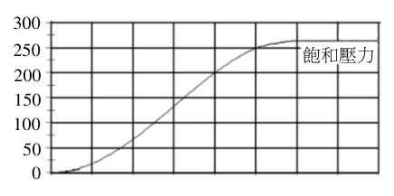
（A） 血液（B） 口腔黏膜（C） 洋蔥根尖（D） 洋蔥表皮（E） 水蘊草葉片答案：（B）
詳解與考點 正解：依圖 1 所示細胞型態判斷，該圖所繪細胞呈不規則扁平多邊形，邊緣柔軟波浪狀而非方正剛硬，且每個細胞可見一明顯細胞核，顯示其不具備植物細胞壁，符合人類上皮細胞的特徵；口腔黏膜經染色後即可觀察到具細胞核與細胞質的扁平上皮細胞，故 B 為正解。
A：血液中的紅血球無細胞核，白血球的形態也不同於圖 1 所示的扁平上皮細胞，A 錯誤。
C：洋蔥根尖為植物細胞，具有方正的細胞壁，排列較整齊，與圖 1 所示形態不符，C 錯誤。
D：洋蔥表皮亦為植物細胞，具明顯細胞壁且形狀規則，與圖 1 所示形態不符，D 錯誤。
E：水蘊草葉片細胞具有細胞壁與葉綠體，與圖 1 所示形態不符，E 錯誤。
本題考點：細胞構造判讀——先以有無細胞壁區分植物與動物細胞；樣本辨識判準——不規則扁平、有明顯細胞核的上皮細胞對應口腔黏膜，方正且有細胞壁者優先判為植物組織。
第 2 題 （多選）
學者對甲乙兩葉菜類作物（栽種後約 2-3 個月可採收）進行在不同溫度下光合作用效率的研究，所得結果如圖 2。圖 3 是某地的全年氣溫變化圖。根據這些資訊，僅考慮溫度與光合作用的關係，下列哪些推論正確？（應選 2 項）
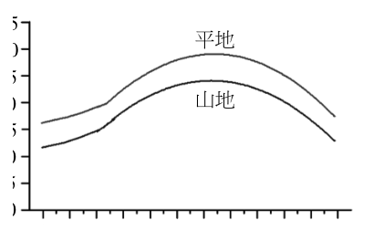
（A） 甲較乙適合於山地全年栽種（B） 若將乙種植於平地，則夏季較冬季所需栽種到收成時間應較短（C） 相較於山地，平地更適合栽種甲（D） 於平地，乙在冬天會比夏天消耗較多二氧化碳（E） 於平地，甲在冬天會比夏天消耗較多二氧化碳答案：（C）（D）
詳解與考點 正解：官方答案為 CD；惟本筆輸入未保留圖 2 的效率曲線與圖 3 的氣溫資料，無法只由現有文字獨立覆核圖值。判斷方法是把圖 2 的效率—溫度曲線對照圖 3 的平地、山地各季氣溫。C：原詳解記錄甲的最適溫約為 15-20℃，平地全年氣溫多落在其高效率區，因此平地較山地適合栽種甲，C 為官方正解。D：原詳解記錄乙的最適溫偏低，平地冬季較接近高效率區，夏季高溫反使效率下降；光合作用較旺盛時消耗較多二氧化碳，因此乙在平地冬天消耗的二氧化碳較夏天多，D 為官方正解。
A：依原圖示判讀，山地冬季氣溫過低；不能因部分季節適合便推論甲可全年栽種，A 錯誤。
B：依原圖示判讀，平地夏季高溫超過乙的最適溫，光合作用效率下降，因此不能推論夏季從栽種到收成的時間較冬季短，B 錯誤。
E：依原圖示的甲效率曲線與平地季節氣溫，甲在冬天並非比夏天消耗較多二氧化碳，E 錯誤。
本題考點：光合作用效率曲線——先找作物最適溫，再比對各地各季溫度是否落在高效率區；二氧化碳消耗——其他條件相同時，光合作用效率較高代表固碳較多；「全年」判斷——須逐季檢查是否皆符合條件。
第 3 題 （多選）
依據細胞學說的主要內容及其推論，下列哪些正確？（應選 3 項）
（A） 病毒細胞是病毒體的構造與功能最基本單位（B） 尺度微小的細菌，其生物體仍由細胞構成（C） 紅血球細胞由血液中既存的紅血球分裂而來（D） 植物體的成長是綜合其細胞的數量增多和尺寸增大的結果（E） 動物體的行為表現複雜，但其功能可由多重細胞協調達成答案：（B）（D）（E）
詳解與考點 正解：細胞學說指出所有生物由細胞構成、細胞是構造與功能的基本單位、細胞來自既存細胞。B：細菌雖尺度微小，仍是由細胞構成的生物，正確。D：植物體成長兼有細胞分裂造成數量增多與細胞伸長造成尺寸增大，正確。E：動物的複雜行為可由神經細胞、肌肉細胞等多種細胞協調達成，正確。
A：病毒沒有細胞結構，病毒顆粒不是細胞，不適用細胞學說，A 錯誤。
C：哺乳類成熟紅血球無細胞核，不能分裂；人體紅血球由骨髓中的造血幹細胞分化而來，C 錯誤。
本題考點：細胞學說——所有生物由細胞組成，細胞為構造與功能基本單位，細胞來自既存細胞；病毒無細胞結構；判斷特定細胞能否分裂時，須看其是否仍具細胞核與分裂能力。
第 4 題 （多選）
孟德爾進行一系列的豌豆雜交實驗，並將實驗數據分析後，整理出分離律與獨立分配律二個遺傳法則。經過後續科學家的努力後，才逐漸確立這些法則對應的分子生物學基礎。獨立分配律指不同對的遺傳因子分離後，自由分配到子代。實質上，遺傳因子究竟是指什麼，則到二十世紀初才被確認。有關遺傳因子的分子組成及結構的研究，下列哪些正確？（應選項） 3
（A） 洒吞（薩登）發現細胞行減數分裂時，染色體的分離與遺傳因子的分離相似（B） 弗蘭克林以X光繞射技術觀察到DNA結晶的繞射影像（C） 華生與克里克建構了DNA的雙股螺旋分子模型（D） 史蒂文斯以果蠅的眼色互交試驗研究發現性聯遺傳（E） 摩根率先發現核酸為遺傳物質答案：（A）（B）（C）
詳解與考點 正解：題幹問遺傳因子的分子組成與結構研究史，須將科學家與其關鍵證據正確配對。A：薩頓在1902年觀察染色體於減數分裂時的分離行為與孟德爾遺傳因子分離相似，提出染色體遺傳學說，正確。B：弗蘭克林以 X 光晶體繞射技術拍攝 DNA 的繞射影像「照片51號」，提供螺旋結構證據，正確。C：華生與克里克根據弗蘭克林等人的資料，於1953年建構 DNA 雙股螺旋模型，正確。
D：以果蠅眼色互交實驗發現性聯遺傳的是摩根，不是史蒂文斯；史蒂文斯主要研究 XY 性別決定，D 錯誤。
E：艾佛里等人在1944年肺炎球菌轉形實驗中率先證實 DNA 為遺傳物質，並非摩根，E 錯誤。
本題考點：遺傳學史實配對——薩頓連結染色體與孟德爾遺傳、弗蘭克林提供 DNA X 光繞射證據、華生與克里克提出雙股螺旋模型；性聯遺傳對應摩根，DNA 為遺傳物質的關鍵證據對應艾佛里等人。
第 5 題 （多選）
卡里科和魏斯曼為 2023 年諾貝爾生醫獎的得主。他們發現 RNA 中的部分尿嘧啶（U）用假尿嘧啶取代後可逃避免疫系統，而延長如 RNA 等核酸在細胞內的存活時間。這項發現使得製造 mRNA 疫苗得到關鍵性技術，並且快速的發展、應用與上市，適時對抗全球流行的新冠疫情，並做出具體貢獻。下列有關真核細胞的 RNA 敘述哪些正確？（應選 3 項）
（A） 尿嘧啶和鳥糞嘌呤以彼此形成鍵結的形式存在RNA中（B） RNA是由嘧啶和嘌呤相互對位鍵結形成的雙股分子（C） 正常人體的免疫系統會偵測非自體的RNA（D） 將RNA中的尿嘧啶置換為假尿嘧啶，轉譯仍可順利進行（E） 將RNA中的尿嘧啶置換為假尿嘧啶，則可提高mRNA疫苗的效力答案：（C）（D）（E）
詳解與考點 正解：題幹指出將 RNA 的部分尿嘧啶改為假尿嘧啶，可逃避免疫系統並延長核酸在細胞內的存活。C：正常人體免疫系統會偵測非自體 RNA，故 C 正確。D：假尿嘧啶在 RNA 中仍可與腺嘌呤配對，核糖體可正常讀取密碼子而進行轉譯，故 D 正確。E：置換後可減少免疫偵測、延長 mRNA 存活與轉譯時間，因而提高 mRNA 疫苗效力，故 E 正確。
A：RNA 中尿嘧啶與腺嘌呤配對，鳥糞嘌呤則與胞嘧啶配對，A 錯誤。
B：正常 mRNA 通常是單股分子，不是由嘧啶、嘌呤對位鍵結形成的雙股分子，B 錯誤。
本題考點：RNA 鹼基配對——U 與 A 配對，G 與 C 配對，正常 mRNA 為單股；mRNA 疫苗原理——假尿嘧啶修飾可降低免疫偵測並延長細胞內存活，仍可維持轉譯。
第 6 題
已知一段雙股去氧核糖核酸，其中一股的含氮鹼基序列為 ATTGCCTTA，A 為腺嘌呤、T 為胸腺嘧啶、C 為胞嘧啶、G 為鳥糞嘌呤，下列有關此段雙股去氧核糖核酸的敘述，何者正確？
（A） 腺嘌呤個數與胞嘧啶相同（B） 腺嘌呤個數為胸腺嘧啶的兩倍（C） 嘧啶總個數多於嘌呤總個數（D） 嘌呤總個數多於嘧啶總個數（E） 鳥糞嘌呤與胞嘧啶個數相加等於腺嘌呤個數答案：（E）
詳解與考點 正解：本題依雙股 DNA 的互補配對 A-T、G-C，先計算兩股鹼基總數再比較。已知股 ATTGCCTTA 中，A=2、T=4、G=1、C=2；互補股 TAACGGAAT 中，A=4、T=2、G=2、C=1。雙股合計 A=2+4=6、T=4+2=6、G=1+2=3、C=2+1=3，因此 G+C=3+3=6，正好等於 A=6，E 正確，故 E 為正解。
A：A=6，C=3，兩者不相同，A 錯誤。
B：A=6、T=6，A/T=6/6=1，並非 2，B 錯誤。
C：嘧啶總數 T+C=6+3=9；嘌呤總數 A+G=6+3=9，兩者相等，嘧啶沒有較多，C 錯誤。
D：嘌呤總數 A+G=6+3=9；嘧啶總數 T+C=6+3=9，兩者相等，嘌呤沒有較多，D 錯誤。
本題考點：DNA 互補配對——雙股 DNA 中 A 與 T 配對、G 與 C 配對，先由已知股寫出互補股再加總；嘌呤與嘧啶判準——A、G 為嘌呤，T、C 為嘧啶，雙股 DNA 的兩類總數相等。
第 7 題 （多選）
一種微球菌 P a e n a r t h r o b a c t e r i a u r e a f a c i e n s K172（簡稱 K172）在 1975 年被發現存活於尼龍工廠的汙水池中。此菌具有特別的 nylonase 酵素，能消化人造的尼龍分子，因此被稱為吃尼龍菌。然而，尼龍之發明及使用始於 1935 年，此之前 P . u r e a f a c i e n s 從未接觸過尼龍。由演化的觀點視之，可用下列哪些論點解釋此菌能夠存活在尼龍工廠的汙水池中？（應選 2 項）
（A） K172是基因改造生物（B） P. ureafaciens DNA的鹼基序列發生改變（C） K172遵循細胞來自細胞的細胞學說（D） K172遵循孟德爾遺傳法則而來（E） 達爾文提出的天擇所造成的生物適應現象答案：（B）（E）
詳解與考點 正解：尼龍在 1935 年才開始使用，K172 卻能在尼龍工廠汙水中存活，關鍵是新代謝能力如何經演化出現並被保留。B：P. ureafaciens 的 DNA 鹼基序列發生改變可產生新的酵素能力；突變是隨機且持續發生的，可能先出現能分解尼龍的個體。E：在含尼龍的汙水環境中，能分解尼龍的個體較易生存與繁殖，經天擇使該菌株頻率上升，故 B、E 正確。
A：題目沒有任何人為基因改造的證據；K172 的能力可由自然突變與天擇解釋，A 錯誤。
C：「細胞來自細胞」是細胞學說，說明細胞的增殖方式，不能解釋新的尼龍分解能力從何而來，C 錯誤。
D：孟德爾遺傳法則描述性狀的遺傳規律，不能直接說明新功能的變異起源及其在環境中的累積，D 錯誤。它看起來對，是因為新性狀能遺傳確與遺傳學有關，但演化解釋還必須指出突變來源與天擇過程。
本題考點：演化機制——DNA 鹼基序列改變可產生遺傳變異，天擇使有利變異在族群中的頻率上升；適應判準——環境不會依需求直接創造性狀，而是篩選原有或新生的可遺傳變異。
第 8 題
小明探討演化理論之發展歷史，發現達爾文手繪之共同祖先概念圖饒富科學趣味，並仿製達爾文首次繪出的生命樹如圖 4；其中之節點為共同祖先，線段表示物種之存續。若以現代觀點解釋之，①為親緣關係樹的根，甲～丁為端末物種，以甲乙代表甲和乙之親緣關係，其餘類推，並以 XY＞YZ 的「＞」表示 XY 的親疏關係較 YZ 親（近），則下列關係何者正確？
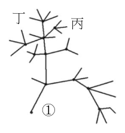
（A） 甲乙＞甲丙（B） 甲乙＜甲丁（C） 甲乙＞乙丙（D） 甲乙＜乙丁（E） 甲乙＞丙丁答案：（D）
詳解與考點 正解：親緣關係樹須比較兩組物種的最近共同祖先；最近共同祖先越靠近端末，代表分歧越晚、親緣越近。依圖 4，乙與丁的最近共同祖先比甲與乙的最近共同祖先更靠近端末，因此乙丁較甲乙親，即甲乙＜乙丁，故 D 為正解。
A：依圖 4，甲乙的最近共同祖先早於甲丙的最近共同祖先，因此甲乙不比甲丙親，錯誤。
B：依圖 4，甲乙不比甲丁疏，此項將分歧先後判反，錯誤。
C：依圖 4，比較兩組最近共同祖先的位置，不能得到甲乙比乙丙親，錯誤。
E：依圖 4，甲乙不比丙丁親，敘述方向與最近共同祖先的位置不合，錯誤。
本題考點：親緣關係樹判讀——每次比較兩組親疏，都先找各組的最近共同祖先；判準是共同祖先越接近端末、分歧越晚者，親緣越近。
第 9 題
有關現行的生物分類系統，下列敘述何者正確？
（A） 階層愈高，其內的（物）種間相似的特徵愈多，成員也較多（B） 階層愈低，其內（物）種較少，親緣關係也較疏遠（C） 任取兩個同目的（物）種必較同科的兩（物）種在親緣關係上疏遠（D） （物）種是分類的基本單位，只能以形態相區別（E） 屬是將（物）種加以歸類後的第一個層級答案：（E）
詳解與考點 正解：題幹問現行生物分類系統的階層原則，關鍵是「物種歸入屬」；物種是分類的基本單位，屬是將物種加以歸類後的第一個較高層級。E 符合此階層關係，故 E 為正解。
A：分類階層愈高，如門、綱，涵蓋的成員種類雖較多，但共同特徵反而愈少；選項把共同特徵的多寡說反了。
B：分類階層愈低，如屬、科，所含物種較少，親緣關係應較近，不是較疏遠。
C：同科的物種必同目，因此同目物種不必比同科物種更疏遠；例如同目但不同科的兩物種，親緣關係確實通常較遠，然而「任取兩個」不能保證如此，C 的必然說法過強。
D：物種可依形態、行為、生殖隔離與分子資料等多種證據區別，不能只以形態相區別。它看起來對，是因為傳統分類常從外形觀察開始，但形態不是判定物種的唯一依據。
本題考點：生物分類階層——階層愈高，成員愈多、共同特徵愈少、親緣愈遠；物種與屬的關係——物種是基本分類單位，將物種歸類後的第一層為屬；物種判定——須綜合形態、生殖隔離、行為與分子資料，不能只看單一特徵。
第 10 題
五種化合物的分子式分別是甲（C₁₉H₁₉N₇O₆）、乙（C₂₀H₃₀O）、丙（C₂₈H₄₄O）、丁（C₆H₈O₆）與戊（C₂₉H₅₀O₂）。某化合物經完全燃燒後，所得二氧化碳與水重量比為 11：3，則此化合物為下列哪一種？（原子量 C＝12.0、H＝1.00、O＝16.0）
（A） 甲（B） 乙（C） 丙（D） 丁（E） 戊答案：（D）
詳解與考點 正解：本題由完全燃燒產物的重量比反推化合物中 C、H 的原子數比，故選用元素莫耳數比。設二氧化碳質量為 11x、水質量為 3x。二氧化碳莫耳數＝11x÷44=x/4，因此 C 的莫耳數＝x/4。水的莫耳數＝3x÷18=x/6，其中 H 的莫耳數＝2×x/6=x/3。故 C：H=x/4：x/3=3:4。D 的丁為 C6H8O6，C：H=6:8=3:4，符合燃燒比值，故 D 為正解。
A：甲的 C：H 比不等於 3:4，與由燃燒產物算得的比例不符。
B：乙的 C：H 比不等於 3:4，與由燃燒產物算得的比例不符。
C：丙的 C：H 比不等於 3:4，與由燃燒產物算得的比例不符。
E：戊的 C：H 比不等於 3:4，與由燃燒產物算得的比例不符。
本題考點：完全燃燒元素分析——CO2 的莫耳數等於原化合物中 C 的莫耳數，H2O 的莫耳數乘以 2 等於 H 的莫耳數；重量比轉原子比——先各以分子量換成莫耳數，再化為最簡整數比；分子式判準——分子式中的 C：H 比與燃燒反推比相同者即符合。
第 11 題 （多選）
在週期表之第二週期中，具有 4 個和 6 個價電子的元素分別以 X 和 Y 表示。下列哪些正確？（應選 3 項）
（A） Y 之價殼層電子數大於 X，故 Y 之原子半徑大於 X（B） \(^{12}\mathrm{X}\) 和 \(^{16}\mathrm{Y}\) 之中子數和質子數的比值均為 1（C） \(\mathrm{XY_2}\) 和 \(\mathrm{XY}\) 互為同分異構物（D） 由路易斯結構可知 \(\mathrm{XY_2}\) 的孤對電子數是 \(\mathrm{XY}\) 的 2 倍（E） \(\mathrm{XY_2}\) 的水溶液呈弱酸性答案：（B）（D）（E）
詳解與考點 正解：第二週期中有 4 個價電子的 X 是碳 C，有 6 個價電子的 Y 是氧 O，因此 XY₂=CO₂、XY=CO；再依原子結構、路易斯結構與酸鹼性逐項判斷。B：¹²C 的質子數為 6、中子數為 12-6=6；¹⁶O 的質子數為 8、中子數為 16-8=8，兩者中子數與質子數的比值皆為 1，故 B 正確。D：CO₂ 的路易斯結構為 O=C=O，兩個氧各有 2 對孤對電子，共 4 對；CO 可寫為 :C≡O:，共 2 對孤對電子，所以 CO₂ 是 CO 的 2 倍，故 D 正確。E：CO₂ 溶於水形成碳酸，水溶液呈弱酸性，故 E 正確。
A：C、O 同屬第二週期，電子層數相同；由左至右有效核電荷增加，原子半徑減小，所以 O 的原子半徑小於 C，不是大於，A 錯誤。它看起來對，是因為 O 的價電子數較多，但同週期半徑主要要看由左至右的有效核電荷變化。
C：CO₂ 的組成為 1 個 C、2 個 O，CO 的組成為 1 個 C、1 個 O，原子數與分子式皆不同，不是同分異構物，C 錯誤。
本題考點：第二週期價電子判定——4 個價電子為 C、6 個價電子為 O，可據此寫出 CO₂ 與 CO；同週期原子半徑——由左至右有效核電荷增加，原子半徑減小；同分異構物判準——分子式相同而結構不同才互為同分異構物；路易斯結構與酸鹼性——由孤對電子計數，CO₂ 溶水形成碳酸而呈弱酸性。
黃鐵礦（\(FeS_{2}\)）是地表上主要礦物之一，通常與他種岩石的硫化物或氧化物伴生。地質學家為了解黃鐵礦成分，進行以下的實驗。其實驗步驟如下：步驟1：將黃鐵礦實驗樣品磨成粉末，於3個錐形瓶（標號1～3）中分別放置0.35克樣品，並加入50mL的酸性溶液。步驟2：將3個錐形瓶置放在室溫，但不同氧氣分壓下。步驟3：經過一天後，取出20mL上層澄清液，測量溶液中含鐵總濃度（\([Fe_{total}]\)，包含Fe(Ⅱ)與Fe(Ⅲ)）、\(SO_{4}^{2−}\)濃度（\([SO_{4}^{2−}]\)）及含硫總濃度（\([S_{total}]\)，包含\([SO_{4}^{2−}]\)與其它含硫物質濃度）。上述含硫總濃度是先用化學方法，將溶液中所有硫化物氧化成\(SO_{4}^{2−}\)後，再加以測量，實驗結果列於表1。
第 12 題
欲測量含硫物質的總濃度時，可選用以下哪種試劑，將水溶液內的硫化物都氧化成 SO₄²⁻？
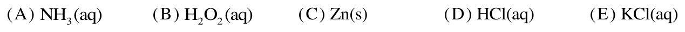
表1 樣品 氧氣的分壓（atm） \([Fe_{total}]\)（mM） \([SO_{4}^{2−}]/[Fe_{total}]\) \([S_{total}]/[Fe_{total}]\) 1 0.21 \(2.4\times10^{−2}\) 1.46 1.74 2 \(3.0\times10^{−3}\) \(1.4\times10^{−3}\) 1.39 1.72 3 \(3.3\times10^{−5}\) \(3.8\times10^{−4}\) 1.24 1.70
本題選項為上圖中的 A／B／C／D，請對照圖片作答。
答案：（B）
詳解與考點 考點：把溶液中所有硫化物（低氧化態硫）氧化成最高價的 SO4²⁻，需用氧化劑。選項 B 對應過氧化氫 H2O2 類強氧化劑，可將硫化物氧化成硫酸根，故選 B。陷阱：C Zn(s) 為活性金屬、屬還原劑，只會還原不會氧化；D HCl(aq) 僅提供酸性，無法把硫氧化到+6；E KCl(aq)、NH3(aq) 皆非氧化劑，無法將硫氧化成 SO4²⁻。本題依官方答案 B。
第 13 題 （多選）
下列實驗觀察哪些為合理敘述？（應選 3 項）
表1 樣品 氧氣的分壓（atm） \([Fe_{total}]\)（mM） \([SO_{4}^{2−}]/[Fe_{total}]\) \([S_{total}]/[Fe_{total}]\) 1 0.21 \(2.4\times10^{−2}\) 1.46 1.74 2 \(3.0\times10^{−3}\) \(1.4\times10^{−3}\) 1.39 1.72 3 \(3.3\times10^{−5}\) \(3.8\times10^{−4}\) 1.24 1.70
（A） 理論上純度 100% 的黃鐵礦樣品，其 [S_total]／[Fe_total] 值應該為 2（B） 黃鐵礦在酸性溶液中，會隨氧氣分壓增高而減少其溶解的量（C） 此實驗黃鐵礦樣品中可能含有氧化鐵，所以量測 [S_total]／[Fe_total] 的值小於 2（D） 在純氮氣下操作此實驗，[SO₄²⁻]／[Fe_total] 的值會大於 1.46（E） 表 1 中，[SO₄²⁻]／[Fe_total] 值比 [S_total]／[Fe_total] 值小，表示在氧氣分壓為 0.21 atm，經過一天仍無法將硫化物都氧化成 SO₄²⁻答案：（A）（C）（E）
詳解與考點 正解：A、C、E。題幹的關鍵是黃鐵礦 FeS2 的化學式與表中兩種「含硫總濃度／含鐵總濃度」比值；先以純物質的 S：Fe 莫耳比 2:1 作基準，再比較表內數值。A：純 FeS2 每 1 個 Fe 對應 2 個 S，因此純度 100% 時 [S]_total／[Fe]_total=2，正確。C：表中 [S]_total／[Fe]_total 為 1.70、1.72、1.74，皆小於 2；若樣品含氧化鐵，會增加 Fe 而不增加 S，使比值降低，故 C 正確。E：在氧氣分壓 0.21 atm 時，[SO4²⁻]／[Fe]_total=1.46，小於 [S]_total／[Fe]_total=1.74，兩者相差 1.74-1.46=0.28，表示仍有部分硫不是硫酸根，故一天後尚未全部氧化成 SO4²⁻，E 正確。
B：氧氣分壓由 3.3×10⁻⁵ atm 增至 0.21 atm 時，[Fe]_total 由 3.8×10⁻⁴ mM 增至 2.4×10⁻² mM，表示溶解量增加，不是減少。它看起來對，是因為氧化有時被誤聯想為形成固體；本表應直接以溶液中的 [Fe]_total 比較溶解量。
D：純氮氣的氧氣分壓更低，硫化物氧化成硫酸根更不完全，所以 [SO4²⁻]／[Fe]_total 應小於 1.46，不會大於 1.46。
本題考點：化學式莫耳比——由 FeS2 判定純物質的 S：Fe=2:1；成分比值判讀——含不帶硫的氧化鐵會使 [S]_total／[Fe]_total 下降；氧化程度判準——[SO4²⁻]／[Fe]_total 小於 [S]_total／[Fe]_total，表示仍有硫未氧化為硫酸根。
第 14 題
硼烷氨（H₃NBH₃）是一種固態能源，可與鹽酸反應產生氫氣。假設在 25℃、1 atm 下，取 1.54 克硼烷氨與足量的鹽酸反應，可完全轉變成硼酸（H₃BO₃）、氯化銨（NH₄Cl）與氫氣，反應式如下：
H₃NBH₃ ＋ HCl ＋ H₂O → H₃BO₃ ＋ NH₄Cl ＋ H₂ （未平衡）
試問所產生氫氣的體積是多少升？（25℃、1 atm，1 莫耳氫氣的體積為 24.5 升；原子量 C＝12.0、H＝1.00、O＝16.0、N＝14.0、B＝10.8）
（A） 1.23（B） 3.36（C） 3.68（D） 4.90（E） 6.00答案：（C）
詳解與考點 正解：本題以化學計量求氫氣體積，先由硼烷氨的質量換算莫耳數，再依平衡反應式的係數比求氫氣莫耳數。硼烷氨 H3NBH3 的分子量＝14+3×1+10.8+3×1=30.8 g/mol。硼烷氨莫耳數＝1.54 g÷30.8 g/mol=0.05 mol。平衡反應式為 H3NBH3+3HCl+3H2O→H3BO3+NH4Cl+3H2↑，故 1 mol H3NBH3 產生 3 mol H2。氫氣莫耳數＝0.05 mol×3=0.15 mol。氫氣體積＝0.15 mol×24.5 L/mol=3.675 L，約為 3.68 L，故 C 為正解。
A：1.23 L÷24.5 L/mol=0.05 mol H2，只把硼烷氨的 0.05 mol 當成氫氣莫耳數，漏乘反應式中的係數 3，A 錯誤。它看起來對，是因為 1.54÷30.8 恰為 0.05，容易在莫耳比換算前就直接乘氣體莫耳體積。
B：3.36 L 對應的氫氣莫耳數＝3.36÷24.5≈0.137 mol，與係數比算得的 0.15 mol 不符，B 錯誤。
D：4.90 L÷24.5 L/mol=0.20 mol H2，相當於把 0.05 mol H3NBH3 誤當每 1 mol 產生 4 mol H2，D 錯誤。
E：6.00 L÷24.5 L/mol≈0.245 mol H2，既不等於 0.05×3=0.15 mol，也不符合平衡反應式的係數比，E 錯誤。
本題考點：化學計量——先以質量÷分子量求反應物莫耳數，再依平衡反應式係數轉換產物莫耳數；氣體莫耳體積——在題設 25℃、1 atm 下以 n×24.5 L/mol 求體積。
第 15 題
李小仁買了一條流行的飛天小丑魚，是一種質量很輕類似氣球的飛行玩具，但是買回來後發現，廠商沒有將飛天小丑魚灌入氣體。於是，李小仁前往附近店家尋找，並填充一定量體積的氦氣，但是找了幾家，發現氦氣的純度有所差異，皆含有體積 1%氣體雜質。試問含有下列何種雜質會使飛天小丑魚最容易浮起？（原子量 C＝12.0、N＝14.0、O＝16.0、Ne＝20.2、Ar＝40.0）
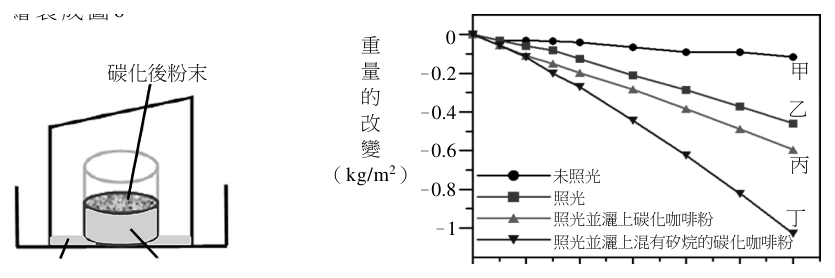
（A） 二氧化碳（B） 氮氣（C） 氖氣（D） 氬氣（E） 氧氣答案：（C）
詳解與考點 正解：飛行玩具最容易浮起，須使充填氣體的平均分子量最低、密度最小。混合氣體平均分子量=0.99×4.0+0.01×M，其中 M 為 1%雜質的分子量；M 愈小，混合氣體愈輕。C：氖氣 Ne 的分子量為 20.2，是各雜質中最小，故玩具總質量最小、淨向上力最大，最容易浮起。
A：CO2 分子量=12.0+16.0×2=44，比 20.2 大，混入後平均分子量較高，錯誤。
B：N2 分子量=14.0×2=28，比 20.2 大，錯誤。
D：Ar 原子量=40.0，比 20.2 大，錯誤。
E：O2 分子量=16.0×2=32，比 20.2 大，錯誤。
本題考點：氣體密度與浮沉——玩具體積一定時，浮力由排開空氣的體積決定；溫度、壓力相同時，平均分子量愈小，填充氣體密度愈小，玩具總質量愈小，淨向上力愈大。混合氣體判準——固定 99%氦氣時，只須比較 1%雜質的分子量。
海水去鹽淡化，可讓水資源再利用。某實驗室發現咖啡渣可作為水純化的材料。首先將咖啡渣在極高溫下碳化成奈米材料，再混以具油脂特性的無色透明矽烷，均勻地灑在一杯海水的表面上，然後放置在一具有斜度上蓋的透明容器（如圖5所示），經在太陽光照射之下，底部漸漸發現有經過凝結後的純水。研究人員針對四種情況，分別是（甲）未照光、（乙）照光、（丙）照光並灑上碳化咖啡粉，以及（丁）照光並灑上混有矽烷的碳化咖啡粉，且後兩種情況使用同樣重量的咖啡粉。在同樣的時間內，測量水杯重量的減少程度，並將實驗結果繪製成圖6。重 0 碳化後粉末量 –0.2 甲的 –0.4 乙改變 –0.6 丙（kg/m2）未照光 – 0.8 照光照光並灑上碳化咖啡粉丁 –1 照光並灑上混有矽烷的碳化咖啡粉純水海水 0 10 20 30 40 50 60 時間（min）圖6 圖5
第 16 題
實驗的結果發現，在水的表面灑上碳化後的咖啡粉，可以增加水的揮發效果，其可能原因為何？
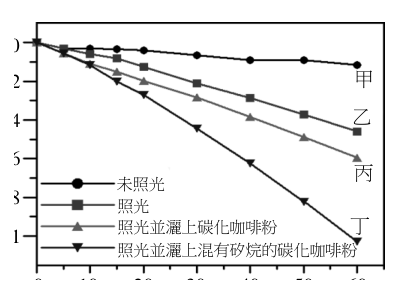
（A） 碳化後的咖啡粉變輕，與水一起揮發（B） 碳化後的咖啡粉變重，把水擠出容器外（C） 碳化後的咖啡粉易溶於水，促進水的揮發（D） 碳化後的咖啡粉，吸光吸熱的效果增加（E） 碳化後的咖啡粉不易吸水，水就容易揮發答案：（D）
詳解與考點 正解：碳化咖啡粉灑在水面後，照光時水的揮發增加；關鍵是找出能直接提高水分子逸出液面速率的機制。D：碳化咖啡粉吸光吸熱效果增加，可將光能轉為熱能，提高水面溫度並加速蒸發，故 D 為正解。
A：咖啡粉是固體，不會因為變輕就與水一同揮發；蒸發的是取得足夠動能而逸出液面的水分子。
B：把水擠出容器屬液體溢出，不是揮發，也不能說明實驗觀察到的蒸發量增加。
C：即使物質溶於水，也不能由此推出水面溫度上升或水分子更易逸出；「易溶於水」不是促進揮發的直接機制。
E：不易吸水只描述材料與水的作用，不能直接提高水分子的動能；吸光吸熱造成水面升溫，才可說明揮發增加。
本題考點：蒸發速率——液面溫度上升時，較多水分子具有足夠能量逸出液面，蒸發加快；吸光吸熱可提升局部溫度，應與溶解、重量或吸水性區分。
第 17 題 （多選）
在水杯中灑上混有油脂特性的矽烷碳化咖啡粉，可使水的揮發效果更佳，下列敘述哪些正確？（應選2項）
（A） 油脂特性的矽烷具疏水性質，可使咖啡粉飄浮在水的表面上，不會產生沉澱（B） 油脂特性的矽烷具親水性質，可與水的互溶性提升（C） 可扮演界面活性劑的角色，使咖啡粉懸浮在水中（D） 可扮演凝聚劑的角色，使咖啡粉凝結成塊，沉入水中（E） 在40～50分鐘間，杯內灑上混有油脂特性矽烷碳化咖啡粉的揮發速率達到 \(0.02\ \dfrac{kg}{m^{2}\cdot min}\)答案：（A）（E）
詳解與考點 正解：官方答案為 AE；惟本筆 E 的選項文字止於「揮發速率達到 kg」，數值與完整單位均已截斷。A：油脂特性的矽烷具疏水性，可使咖啡粉飄浮於水面而不沉澱，集中在表面吸光、吸熱以加速蒸發，故 A 正確。E：依圖 6 丁線在 40～50 分鐘間的重量變化，應以「揮發速率＝該段重量減少量÷10 分鐘＝該段重量減少量÷600 秒」算出數值，再與 E 原有數值及單位比對；現存文字不足以核對該數值，不能逕改寫成「揮發速率達最大」。
B：油脂特性的矽烷是疏水，不是親水，不能提升與水的互溶性；B 錯誤。
C：界面活性劑使物質較易分散或懸浮於水中；本題機制是疏水咖啡粉浮在水面，不是懸浮水中；C 錯誤。它看起來對，是因為矽烷被混入粉末，容易聯想到使粉末均勻分散，卻與題幹所述油脂特性不符。
D：凝聚並沉入水中會減少表面吸光、吸熱的效果，與題目要提升揮發的機制相反；D 錯誤。
本題考點：疏水性與蒸發——疏水粉末浮於水面，可增加表面吸光、吸熱並加速揮發；圖表斜率判讀——重量對時間圖某段的揮發速率，須以該段重量減少量除以經過時間計算。
第 18 題 （多選）
有甲、乙、丙及丁四種純物質，皆不會相互反應，其熔點、沸點與加水後的情況如下表 2 所示。下列有關甲、乙、丙、丁四種純物質的敘述，哪些正確？（應選 3 項）
表 2 甲 乙 丙 丁 熔點（℃） 16.6 1025 −22.9 776 沸點（℃） 118.1 1836 76.7 1420 取 1 克純物質加入 10 毫升水，攪拌後靜置 無色溶液，呈弱酸性 無化學反應發生，呈懸浮狀，並有沉澱 液體分層 完全溶解後呈無色溶液
（A） 乙與丁的混合物可藉由加入水後，而進行後續的分離（B） 丙與水的混合物適合使用蒸發結晶法分離（C） 分離乙與水的混合物的過程可使用濾紙過濾（D） 甲和丙為強電解質（E） 丁可能為離子化合物答案：（A）（C）（E）
詳解與考點 正解：本題要依表 2 的熔點、沸點及加水後情形，判斷溶解性、分離方法與物質類別。A：表中乙加水後呈懸浮沉澱，表示難溶於水；丁則完全溶解，可利用溶解度差異，加水後再過濾分離，正確。C：乙與水混合後仍有不溶固體，可用濾紙過濾，正確。E：表中丁的熔點為 776℃、沸點為 1420℃，均偏高，且加水後完全溶解成無色溶液，符合離子化合物的可能特徵，正確，故選 A、C、E。
B：表中丙與水分層而不互溶，未形成可藉蒸發水分取得溶質晶體的均勻溶液，不適合用蒸發結晶法，錯誤。
D：依表 2，甲水溶液僅呈弱酸性，屬弱電解質；丙與水分層且不導電，屬非電解質，因此甲、丙都不是強電解質，錯誤。
本題考點：混合物分離——不溶固體與液體可用過濾，互不相溶的液體會分層；離子化合物判準——熔、沸點偏高且水溶後具有電解質特徵，可支持其可能為離子化合物；電解質辨析——弱酸是弱電解質，不導電者不是強電解質。
第 19 題 （多選）
臺灣目前的核能電廠利用核燃料以發電，全部過程中主要牽涉到以下哪些形式的能量轉換與反應？（應選 3 項）
（A） 質能轉換（B） 聲能轉電能（C） 熱能轉動能（D） 核融合（E） 核分裂答案：（A）（C）（E）
詳解與考點 正解：核電廠的核燃料吸收中子後發生核分裂。A：核分裂的質量虧損依 E=mc² 轉為能量，屬質能轉換，正確。C：核分裂釋出的熱使水成蒸氣，蒸氣推動汽輪機，為熱能轉動能，正確。E：現有核電廠的主要核反應是核分裂，正確。
B：核電廠主要不是以聲能轉換為電能，B 錯誤。
D：核融合是太陽與氫彈所涉反應，現有商業核電廠並非以核融合發電，D 錯誤。
本題考點：核能發電流程——核分裂釋能→熱能使蒸氣推動渦輪→動能驅動發電機；質能等價——核反應中的質量虧損可轉成能量；核分裂與核融合——商業核電廠主要採核分裂。
第 20 題 （多選）
下列關於基本交互作用的敘述，哪些正確？（應選 2 項）
（A） 基本交互作用中，僅有重力的作用範圍可達無窮遠，故為星系形成的主要原因（B） 電子繞著原子核運動，主要是因為重力（C） 單獨的中子可藉由弱力衰變為質子、電子和其他粒子（D） 弱力與強力的作用範圍比原子的尺度還小（E） 質子與中子間有強力，但中子與中子間並沒有強力答案：（C）（D）
詳解與考點 正解：本題判斷四種基本交互作用的作用範圍與作用對象。C：單獨的中子可經弱力發生 β⁻ 衰變，成為質子、電子與反電子微中子，正確。D：強力與弱力的作用範圍都約在 10⁻¹⁵ m 量級，遠小於原子約 10⁻¹⁰ m 的尺度，正確，故答案為 CD。
A：重力與電磁力的作用範圍都可達無窮遠，並非僅有重力如此；星系形成主要靠重力雖正確，前半句錯誤，A 錯誤。它看起來對，是因為星系尺度確實由重力主導，但不能據此忽略電磁力也具有無窮遠作用範圍。
B：電子與原子核間主要受庫侖電磁力吸引，重力相較之下極微弱，B 錯誤。
E：強力作用於核子之間，包含質子與質子、質子與中子、中子與中子；中子與中子間同樣有強力，E 錯誤。
本題考點：基本交互作用——電磁力與重力可作用至無窮遠，強力與弱力則為短程力；作用對象判準——原子核束縛涉及強力，電子與原子核的吸引主要是電磁力，弱力可造成 β 衰變。
第 21 題
眼球的主要結構及成像原理，和相機類似，如圖 7 所示。光進入眼球時，會經過「角膜」、「瞳孔」與「水晶體」，「瞳孔」如同相機的光圈，可縮放以控制進光量的多寡；而「角膜」與「水晶體」如同相機鏡頭中的透鏡。最後成像在「視網膜」，如同相機的感光元件。下列敘述，何者正確？
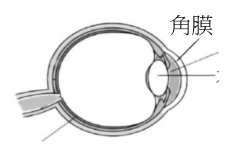
（A） 進入眼球的光可在視網膜上成像，主要是由於干涉現象（B） 物體成像在視網膜的前方或後方，可配戴凹透鏡或凸透鏡來矯正，主要是利用光的繞射現象（C） 若遠處物體的成像位置在相機的感光元件之前，可改用感光程度更高的元件，使影像由模糊變為清晰（D） 遠方物體在照相機感光元件上形成倒立實像，在眼睛的視網膜上也是形成倒立實像（E） 若成像模糊，照相機是調整鏡頭與感光元件的距離，而眼睛則只靠縮放瞳孔，使成像清晰答案：（D）
詳解與考點 正解：題幹將眼睛與相機對照，關鍵是角膜、水晶體與相機鏡頭皆以凸透鏡折射成像；遠方物體在感光元件與視網膜上都形成倒立實像。D 的敘述正確，故 D 為正解。
A：光在視網膜上成像主要靠凸透鏡的折射，不是干涉現象，A 錯誤。
B：近視或遠視以凹透鏡、凸透鏡矯正，是利用折射改變光路，不是繞射，B 錯誤。
C：成像位置在感光元件之前是焦距或鏡頭位置的問題，提高感光度只能改變感光能力，不能使模糊影像清晰，C 錯誤。它看起來對，是因為感光元件確實影響照片亮度；但清晰度要由成像平面是否落在感光元件上決定。
E：相機可調整鏡頭與感光元件的距離；眼睛則由睫狀肌改變水晶體曲率以調節焦距，瞳孔只控制進光量，E 錯誤。
本題考點：凸透鏡成像——物體經凸透鏡折射後可在光屏、感光元件或視網膜上形成倒立實像；成像清晰判準——像必須落在感光面上，焦距或鏡頭位置不合即模糊；眼睛調節——睫狀肌改變水晶體曲率，瞳孔負責調節進光量。
高能的粒子束或X光束可用於治療惡性腫瘤（癌症）。每單位質量的人體組織所吸收的射束能量稱為吸收劑量。射束通常對準腫瘤照射，癌細胞與正常細胞吸收射束的能量後，DNA會遭到破壞，而癌細胞死亡的機率較正常細胞為高。圖8顯示的是電子、質子、和兩個能量不同的X光等四種射束之吸收劑量隨進入表皮深度的變化。圖中各射束名稱下，註明該射束中單一粒子或光子入射人體時的能量，其中1.0 MeV約為1.6×10−13 J。 X光束（20 MeV）細胞 X光束組（4.0 MeV）織吸收劑量質子束電子束（150 MeV）（4.0 MeV） 0 1 2 3 4 5 6 7 8 9 10 11 12 13 14 15 進入表皮深度（公分）圖8
第 22 題 （多選）
關於上述四種射束的敘述，下列哪些正確？（應選 2 項）
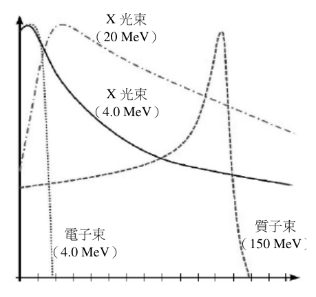
（A） 質子射束的粒子與α射線的粒子相同（B） 質子束的粒子數密度必為電子束粒子數密度的37.5倍（C） 20 MeV之X光的光子頻率為4 MeV之X光的光子頻率的5倍（D） 150 MeV之質子的速率和4 MeV之光子的速率相同（E） 四種射束中，只有X光束能夠穿透15公分厚的細胞組織答案：（C）（E）
詳解與考點 正解：官方答案為 CE；惟本筆輸入未保留圖 8 的四條劑量曲線，E 無法只由現有文字獨立覆核，因此須將圖示判讀與可由公式驗證的結論分開。C：X 光光子滿足 E=hf，頻率 f 與能量 E 成正比；20/4=5，所以 20 MeV X 光的頻率為 4 MeV X 光的 5 倍，C 正確。E：原詳解記錄圖 8 中兩種 X 光在 15 公分深處仍有吸收劑量、質子束約至 12 公分後降為零，電子束則在更淺處衰減；依該圖示紀錄，只有 X 光束能穿透 15 公分厚的細胞組織，E 為官方正解。
A：質子是氫原子核；α 粒子是氦原子核，含 2 個質子與 2 個中子，兩者不相同，A 錯誤。
B：吸收劑量受單一粒子能量、粒子數與能量沉積方式共同影響，不能直接推出粒子數密度必為 37.5 倍，B 錯誤。
D：4 MeV 光子以光速傳播；150 MeV 質子具有靜止質量，速率小於光速，兩者速率不相同，D 錯誤。
本題考點：光子能量——由 E=hf 判斷能量比等於頻率比；射線粒子本質——依組成與有無靜止質量判別質子、α 粒子與光子；穿透深度——須以劑量曲線在指定深度是否仍非零為判準。
第 23 題 （多選）
若有癌細胞存在於表皮下某處，則依據上面所提供的資訊，下列敘述哪些可以達到「儘量殺除癌細胞、保留正常細胞」的最佳效果？（應選 2 項）
（A） 癌細胞在表皮下10公分處，應使用電子束（B） 癌細胞在表皮下10至11公分處，應使用質子束（C） 癌細胞在表皮下0至2公分處，應使用4 MeV之X光束（D） 癌細胞在表皮下2至10公分處，應使用20 MeV之X光束（E） 癌細胞在表皮下3至8公分處，可以結合電子束及質子束一起使用答案：（B）（D）
詳解與考點 正解：題幹要求「儘量殺除癌細胞、保留正常細胞」，應依吸收劑量—深度曲線，選擇在病灶深度劑量高、對其他深度正常組織傷害較小的射束。B：質子束在約 10～11 公分處有布拉格峰，劑量出現尖峰後驟降，可集中殺除該深度癌細胞並保護後方組織，故 B 正確。D：20 MeV X 光在表淺劑量較低，於約 2～10 公分維持較高劑量，適合此中段深度病灶，故 D 正確。
A：電子束在表皮下 10 公分處的劑量幾乎為 0，無法有效殺除該處癌細胞，A 錯誤。
C：表皮下 0～2 公分屬淺層病灶，4 MeV X 光在此深度並非表面劑量最高的最佳選擇，C 錯誤。
E：電子束及質子束合用雖可涵蓋不同深度，卻會增加正常細胞受照範圍，不符合「保留正常細胞」的最佳效果，E 錯誤。它看起來對，是因為兩種射束的高劑量區可互補，但最佳策略仍須比較正常組織的額外受照。
本題考點：放射治療劑量分布——射束選擇以病灶深度劑量高、正常組織劑量低為判準；質子束布拉格峰——在特定深度形成劑量尖峰並於後方迅速下降；X 光能量與穿透深度——較高能量的 X 光可在較深組織維持較高劑量。
電冰箱的操作原理是利用低溫的冷媒來冷卻冰箱裡的食物，再用壓縮機壓縮吸收熱能後的冷媒，提高其溫度，以利於其後之散熱過程。冷媒經散熱片把熱能釋放到周遭空氣中後，經過降溫、降壓又可以用來冷卻冰箱裡的食物，如此構成冷卻的循環，而循環過程會消耗電能。
第 24 題 （多選）
下列有關電冰箱的敘述，哪些正確？（應選 2 項）
（A） 電冰箱是利用電能作功把冰箱內的熱能轉移到冰箱外（B） 電冰箱裡面的壓縮機的功能是把冷媒降溫並增加其壓力（C） 於密閉隔熱室內打開空冰箱的門，通電並經長時間運轉後，平均室溫會提高（D） 冷媒冷卻冰箱裡的食物時是處於低溫高壓狀態（E） 冷媒的溫度低於室溫仍然可以將其熱能直接傳給周遭的空氣答案：（A）（C）
詳解與考點 正解：題幹可辨識的計算條件僅有「5 升；原子量 C=12.0、H=1.00、O=16.0、N=14.0、B=10.8」及數值選項，完整題幹與反應式均因 OCR 截斷而缺失。現有資料無法重建氣體體積／莫耳數計算的公式、代入值與中間結果；依官方答案，A、C 為正確選項。原舊詳解以冷媒循環的吸熱、壓縮做功與散熱論述，與可見的氣體體積／莫耳數計算條件無關，不能作為判斷 A、C 的依據。
B：缺少完整題幹、反應式、物質量與溫壓條件，無從逐步驗算 3.36 的來源；依官方答案 B 非正解。
D：缺少完整題幹、反應式、物質量與溫壓條件，無從逐步驗算 4.90 的來源；依官方答案 D 非正解。
E：缺少完整題幹、反應式、物質量與溫壓條件，無從逐步驗算 6.00 的來源。它看起來可能對，是因為題面可見「5 升」等數值，但該數值所屬的物理條件已遺失，不能直接代入或比大小；依官方答案 E 非正解。
本題考點：氣體體積／莫耳數計算——應先由完整反應式與題設條件建立莫耳比，再代入體積、溫度與壓力逐步換算；資料完整性判準——題幹缺少反應式或溫壓條件時，不可把無關的冷媒循環敘述當作計算依據。
第 25 題
冰箱、冷凍庫的效率可看其性能係數，其定義為：\( \text{性能係數} = \dfrac{\text{轉移的熱能}}{\text{輸入的功}} \)。若一電冰箱性能係數為 2.5，則輸入 1.0 度電約可轉移多少熱能？（1 度電＝1 kW·h，輸入的功可視為輸入的電能）
（A） 3.6×10⁶ J（B） 7.2×10⁶ J（C） 9.0×10⁶ J（D） 1.1×10⁷ J（E） 1.4×10⁷ J答案：（C）
詳解與考點 正解：題幹給性能係數 COP=轉移熱能 Q／輸入功 W，應先把 1.0 度電換算為焦耳，再用 Q=COP×W。W=1.0 kW·h=1.0×3.6×10⁶ J=3.6×10⁶ J；Q=2.5×3.6×10⁶ J=9.0×10⁶ J，故 C 為正解。
A：3.6×10⁶ J 只等於輸入功 W，直接把 W 當成轉移熱能 Q，漏乘 COP=2.5，錯誤。
B：7.2×10⁶ J=2.0×3.6×10⁶ J，相當於誤把 COP=2.5 當成 2，錯誤。
D、E：1.1×10⁷ J 與 1.4×10⁷ J 都不等於 2.5×3.6×10⁶ J=9.0×10⁶ J，均為計算乘積或單位換算錯誤。
本題考點：冰箱性能係數——COP=Q/W，所以 Q=COP×W；電能換算——1 kW·h=3.6×10⁶ J，先統一單位再代入計算。
汽車的安全系統判斷車身受到撞擊而急遽減速時，裝在方向盤裡的安全氣囊即會充氣彈出，透過內部氣體的緩衝，配合安全帶的作用，來降低駕駛人受到的衝擊力。 300 圖9為一款汽車安全氣囊的充充 250 飽和壓力氣氣壓力與充氣時間的關係圖（100 200 壓 kPa大約為1大氣壓）。在駕駛人撞擊 150 力 100 到安全氣囊前，必須要有足夠的時（kPa） 50 間讓安全氣囊至少充氣達飽和壓力 0 0 10 20 30 40 50 60 70 80 的一半以上，才能藉由緩衝達到保充氣時間（ms）護駕駛人的效果。依據上述文字與圖9 圖9，回答第26～27題。
第 26 題
根據圖 9，開始充氣的安全氣囊，至少約需時多少，可達保護駕駛人的氣壓？
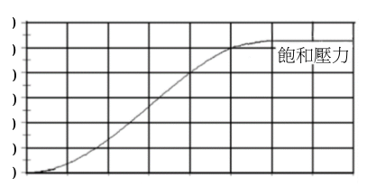
（A） 10 ms（B） 20 ms（C） 30 ms（D） 40 ms（E） 50 ms答案：（C）
詳解與考點 正解：題幹問「至少約需時多少」，須從壓力—時間圖找出保護駕駛人所需壓力首次達標的時刻。圖中飽和壓力約為 250 kPa，其一半約為 125 kPa；曲線首次達到約 125 kPa 時，充氣時間約為 30 ms。C 正確。
A：10 ms 時壓力明顯低於 125 kPa，尚未達標。
B：20 ms 時壓力仍低於 125 kPa，尚未達標。
D：40 ms 時雖已超過 125 kPa，但不是首次達標的最短時間。
E：50 ms 時也已超過 125 kPa，但題目問至少所需時間，不應取更晚時刻。
本題考點：關係圖判讀——先由終值求目標壓力，再沿曲線找第一次達到該值的橫軸時間；題幹出現「至少」時，選剛達門檻的最早時刻。
第 27 題
質量為 50 kg 的駕駛人在國道開車，以 108 km/h（即 30 m/s）的速度向東前進。假設該車在發生正面撞擊的瞬間，安全帶與車體支撐立即開始施予駕駛人一個固定的水平力，而方向盤的轉軸也立即收縮，致使方向盤向前水平移動，安全氣囊也開始充氣。若駕駛人接觸到氣囊時，其速度為 54 km/h 向東，而安全氣囊充氣恰達飽和壓力的一半，則駕駛人受到的水平定力約為多少？
（A） 150000 N（B） 25000 N（C） 8880 N（D） 1000 N（E） 250 N答案：（B）
詳解與考點 正解：駕駛人由 30 m/s 減速至 54 km/h=54÷3.6=15 m/s，需用動量定理 F·Δt=Δp；氣囊充氣至飽和壓力一半的時間由第 26 題為約 30 ms=0.03 s。速度改變量為 Δv=30-15=15 m/s，動量改變量為 Δp=mΔv=50×15=750 kg·m/s。故水平定力 F=Δp/Δt=750/0.03=25000 N，B 為正解。
A：150000 N 對應 750÷0.005=150000，等於誤把作用時間取為 5 ms，未用題設的 30 ms，A 錯誤。
C：8880 N 不等於 750÷0.03=25000，動量變化或時間代入錯誤，C 錯誤。
D：1000 N 若作用於 0.03 s，衝量僅 1000×0.03=30 N·s，小於所需 750 N·s，D 錯誤。
E：250 N 若作用於 0.03 s，衝量僅 250×0.03=7.5 N·s，更遠小於所需 750 N·s，E 錯誤。
本題考點：動量定理——固定力的衝量 FΔt 等於動量變化量 mΔv；單位換算——54 km/h 要先除以 3.6 化為 15 m/s，30 ms 要除以 1000 化為 0.03 s，再代入求力。
第 28 題 （多選）
圖 10 為臺灣地質分區圖，由西至東為 I：澎湖群島、II：西部濱海平原、III：西部麓山帶、IV：雪山山脈、V：中央山脈、VI：花東縱谷、VII：海岸山脈、VIII：島弧（綠島、蘭嶼）。下列有關各分區的地質事件哪些正確？（應選 2 項）
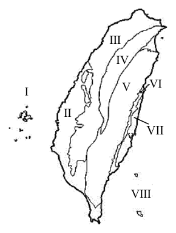
（A） I 區的火成岩與 VIII 區的火成岩種類不同（B） 活動斷層僅分布在 IV、V 區（C） 在中生代形成的恐龍化石可以在 III 區發現（D） V 區的變質岩大都比 IV 區的變質岩的變質度高（E） VII 區蘊藏有石油資源答案：（A）（D）
詳解與考點 正解：題幹要求比對各地質分區的火成岩、變質岩與構造特徵。A：I 區澎湖以玄武岩為主，VIII 區綠島、蘭嶼為隱沒帶島弧，主要為安山岩，岩石種類與成因不同，正確。D：V 區中央山脈核心出露較老且變質度較高的岩層；IV 區雪山山脈以變質度較低的硬頁岩、板岩為主，故 D 正確。
B：活動斷層也分布於西部麓山帶等地，並非僅限 IV、V 區。
C：III 區地層多為新生代，且臺灣尚未發現恐龍化石，錯誤。
E：石油、天然氣資源主要分布於西部平原與麓山帶一帶，不以 VII 區海岸山脈為主。
本題考點：臺灣地質分區——澎湖玄武岩與東部島弧安山岩的成因不同；中央山脈核心的變質度通常高於雪山山脈；判讀資源與活動斷層分布時不可把範圍限縮到單一山區。
第 29 題
海洋裡有各種不同時間尺度的運動和現象，例如：（甲）潮汐、（乙）聖嬰現象、（丙）湧浪、（丁）風浪、（戊）溫鹽環流。這些運動和現象的大致週期，從長至短的順序為何？
（A） 甲乙丙戊丁（B） 戊乙甲丙丁（C） 戊甲丙丁乙（D） 甲丙乙戊丁（E） 乙戊甲丙丁答案：（B）
詳解與考點 正解：題幹要比較各海洋運動的「大致週期」，先以時間尺度由長到短排序。溫鹽環流（戊）約千年；聖嬰現象（乙）約 2～7 年；潮汐（甲）約半天至一天，即 12 或 24 小時；湧浪（丙）約 10～30 秒；風浪（丁）約數秒。因此順序為戊＞乙＞甲＞丙＞丁，B 的「戊乙甲丙丁」正確，故 B 為正解。
A：排列為甲＞乙＞丙＞戊＞丁，將週期約數小時的潮汐置於週期數年的聖嬰現象之前，也把週期千年的溫鹽環流置於湧浪之後，均與時間尺度不合，A 錯誤。
C、D、E：三者都未將溫鹽環流列在最長週期，或將聖嬰現象與潮汐的先後顛倒；潮汐僅數小時，遠短於聖嬰現象的數年，故均錯誤。它們看起來合理，是因為潮汐變化顯著，容易被誤以為是較長尺度的海洋運動。
本題考點：海洋運動時間尺度——排序時先以量級判讀，溫鹽環流為千年、聖嬰為年、潮汐為小時、湧浪為數十秒、風浪為數秒；週期比較判準——先辨識現象的代表時間單位，再由大到小排列。
第 30 題 （多選）
若空氣中水氣含量不變，下列哪些方式最不可能發生水氣凝結現象？（應選 2 項）
（A） 氣流受到地形抬升，沿著迎風坡爬升（B） 暖空氣吹過冷海面（C） 地表輻射冷卻導致空氣溫度改變（D） 空氣在地面高壓區的上空向下沉（E） 空氣塊過山後產生落山風答案：（D）（E）
詳解與考點 正解：題幹限定水氣含量不變，凝結的關鍵在於空氣是否冷卻至露點以下；下沉空氣會增溫，因而最不利凝結。D：高壓區上空的空氣下沉時絕熱增溫，溫度上升、相對濕度降低，水氣不易凝結，故 D 正確。E：空氣塊越過山脈後沿背風坡下沉，發生乾絕熱增溫，即焚風效應，氣溫升高而不易凝結，故 E 正確。
A：氣流受地形抬升，沿迎風坡上升會膨脹冷卻，容易形成雲，並非最不可能凝結。
B：暖空氣吹過冷海面會被冷卻，可能形成霧，並非最不可能凝結。
C：地表輻射冷卻使近地面空氣降溫，可形成露或霧，並非最不可能凝結。
本題考點：水氣凝結條件——水氣含量不變時，空氣降溫至露點以下才易凝結；絕熱變化判準——上升冷卻利於凝結，下沉增溫使相對濕度降低而不利凝結。
第 31 題
地震預警是利用地震資訊的快速發布，讓地震波尚未到達的地區能即時因應。假設從地震發生到市民收到中央氣象署預警通知所需時間為 10 秒，P 波的速率為每秒 5 公里，S 波的速率為每秒 3 公里。假設震波速率不變，某地震發生後，若臺北測站測得的 P 波比 S 波早到 20 秒，則臺北市民在這地震的 S 波到達前，有多少秒可做緊急應變？
（A） 30（B） 35（C） 40（D） 45（E） 50答案：（C）
詳解與考點 正解：P 波與 S 波走過相同距離，可用 20 秒到時差先求震源距離，再計算 S 波到達前扣除通知時間後的可用秒數。設震源到臺北距離為 d km，則 P 波到達時間=d/5，S 波到達時間=d/3。由 d/3−d/5=20，得 5d/15−3d/15=20，2d/15=20，2d=300，d=150 km。P 波到達時間=150/5=30 秒，S 波到達時間=150/3=50 秒。市民在地震發生後 10 秒收到通知，因此可應變時間=50−10=40 秒，故 C 為正解。
A：30 秒是 P 波到達時間 150/5=30，誤把 P 波到時當成通知後等待 S 波的時間；正確值應為 50−10=40 秒。
B：若算成 35 秒，等於先把 S 波到達時間誤算為 45 秒，再作 45−10=35；但 S 波到時應為 150/3=50 秒，因此錯誤。
D：45 秒等於把 10 秒通知時間只扣掉一半，誤作 50−5=45；題幹明定通知需 10 秒，應作 50−10=40，故錯誤。
E：50 秒是 S 波自地震發生至到達的總時間 150/3=50，漏扣市民收到通知前已經過的 10 秒，故錯誤。
本題考點：波速計算——到達時間=距離／速率，先由 d/vS−d/vP 求共同路程；預警可用時間=S 波到達總時間−通知所需時間。
第 32 題
北半球有一溫帶氣旋，其地面氣壓與鋒面的分布如圖 11 所示。下列有關此天氣圖的敘述，何者正確？
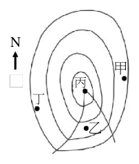
（A） 甲地點大約吹西風（B） 乙地點的溫度最低（C） 丙地點的氣壓最高（D） 丁地點大約吹西北風（E） 乙地點的天氣是陰雨天答案：（D）
詳解與考點 正解：題幹指定北半球溫帶氣旋，地面風在低壓周圍呈逆時針並向中心旋入。丁位於氣旋西側偏北，氣流大致由西北方吹向低壓中心，故丁地點約吹西北風，D 正確。
A：甲位於氣旋東側，風向約偏南，不是西風。
B：乙在暖區，溫度未必最低；較低溫空氣通常在冷鋒後方。
C：丙靠近氣旋中心，氣壓應較低，不會最高。
E：乙在暖區而非鋒面附近，陰雨通常較集中在鋒面帶，不能判為陰雨天。
本題考點：北半球溫帶氣旋——地面風逆時針且向低壓中心旋入；判讀天氣圖時，先找低壓中心與鋒面，再依相對位置判斷風向、氣壓與天氣。
第 33 題 （多選）
下列有關臺灣周邊海域潮汐的敘述，哪些正確？（應選 3 項）
（A） 西部海岸的潮差由南北兩端向中部增大（B） 基隆與高雄外海的水深較深，受海底地形的影響，其潮差較其他區域小（C） 東部海岸因地形開闊又面向太平洋，故潮差較西部大（D） 滿潮的時間，東部海岸比西部海岸晚約五小時左右（E） 退潮時，海水由臺灣海峽南北端流出答案：（A）（B）（E）
詳解與考點 正解：臺灣周邊潮汐須由臺灣海峽的地形與潮波傳播方向判讀。A：海峽呈喇叭形水道，潮波由南北兩端傳入，中部如澎湖附近受共振影響，潮差由南北端向中部增大，正確。B：基隆與高雄外海水深較深，受海底地形影響，潮差較其他區域小，正確。E：潮波由臺灣海峽南、北兩端傳入，退潮時海水向兩端流出，正確，故選 A、B、E。
C：東部面向太平洋廣大水域，潮差反而較小，約 1 m 以下；西部海峽的地形共振使潮差較大，錯誤。
D：東部滿潮時間實際比西部早，非晚約 5 小時，錯誤。它看起來可能選 C，是因為將「面向開闊海洋」誤當成潮差必大，卻忽略海峽地形與共振的放大作用。
本題考點：潮差地形效應——喇叭形海峽與共振可放大中部潮差；潮波傳播——由南、北端傳入的潮波決定滿退潮時間與流向；區域比較——東部開闊海岸潮差通常小於西部海峽。
第 34 題 （多選）
一個未飽和空氣塊在上升過程中，假設不與環境交換熱量，每上升 1 公里，溫度約降低 10℃；露點每上升 1 公里約降低 2℃。假設有五個地點，在高度為 0 時，其溫度和露點如下表。若各自的空氣塊上升至圖 12 的高度時，哪些地點較可能開始形成雲層的雲底？（應選 2 項）
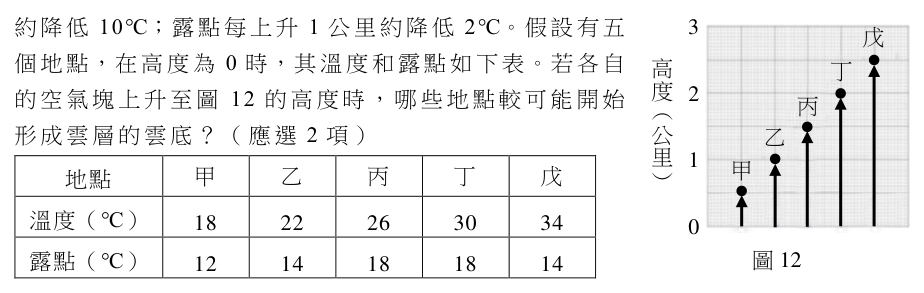
五個地點在高度為 0 時的溫度與露點 地點 甲 乙 丙 丁 戊 溫度（℃） 18 22 26 30 34 露點（℃） 12 14 18 18 14
（A） 甲（B） 乙（C） 丙（D） 丁（E） 戊答案：（B）（E）
詳解與考點 正解：未飽和空氣塊上升時，溫度每 1 km 降低 10℃，露點每 1 km 降低 2℃，因此溫度與露點的差每 1 km 縮小 10−2=8℃；先用初始溫度差除以 8，求各地抬升凝結高度，再與圖 12 的箭頭頂端高度比對。雲底高度 H=(T−Td)/8，單位為 km。B：乙地 H=(22−14)/8=8/8=1.0，與圖中約 1.0 km 相符，會在該高度開始形成雲底，正確。E：戊地 H=(34−14)/8=20/8=2.5，與圖中約 2.5 km 相符，會在該高度開始形成雲底，正確，故選 BE。
A：甲地 H=(18−12)/8=6/8=0.75，與圖中箭頭高度不一致，A 錯誤。
C：丙地 H=(26−18)/8=8/8=1.0，與圖中箭頭高度不一致，C 錯誤。
D：丁地 H=(30−18)/8=12/8=1.5，與圖中箭頭高度不一致，D 錯誤。
本題考點：抬升凝結高度——未飽和空氣塊上升時，溫度與露點差每 1 km 減少 8℃；雲底判準——先算 H=(T−Td)/8，再與指定空氣塊的實際上升高度比對，高度相符才會開始凝結。
第 35 題 （多選）
環境汙染及全球暖化是全球共同問題，因此各國政府積極發展綠能，當中風力與太陽光電發電扮演重要角色。下列哪些是臺灣在開發相關能源時必須考量的因素？（應選 2 項）
（A） 臺灣風場的主要來源是西南氣流（B） 同一風場的風力發電量會有季節性的差異（C） 臺灣位處低緯度，因此日照量不足，不適合發展太陽光電（D） 太陽光電在發電過程不會產生碳排放，但光電板生產過程中仍有碳排放的問題（E） 風力與太陽光電發電互相配合就能不分季節長時間的穩定供電答案：（B）（D）
詳解與考點 正解：題幹問的是開發風力與太陽光電時的實際考量，判斷關鍵在發電量的季節變動與全生命週期碳排。B：臺灣同一風場的風速會隨季節改變，冬季東北季風較強、夏季風速較低，發電量因而有季節性起伏，必須納入規劃，正確。D：太陽光電板在發電過程本身不產生碳排放，但矽提煉、封裝等製造過程仍有碳足跡，須作生命週期評估，正確。
A：臺灣重要風場主要受冬季東北季風影響，不是以西南氣流為主要來源，A 錯誤。
C：臺灣位處低緯度，日照條件並非不足，不能據此說不適合發展太陽光電，C 錯誤。它看起來對，是把低緯度與高溫、多雲等單一印象混為一談，忽略日照量才是判斷光電潛力的直接條件。
E：風力與太陽光電的發電高峰時段不同，搭配可互補但仍有季節與天候造成的供電缺口，不能不分季節長時間穩定供電，E 錯誤。
本題考點：再生能源間歇性——風力發電量受季節風影響，光電受日照與天候影響，互補不等於可全時穩定供電；生命週期碳排——評估光電不能只看發電階段，也要納入製造階段的碳足跡。
第 36 題
相對於目前海水面高度，2 萬年前至今的全球海水面變化如圖 13。造成近 2 萬年以來海水面變動最可能的原因為何？
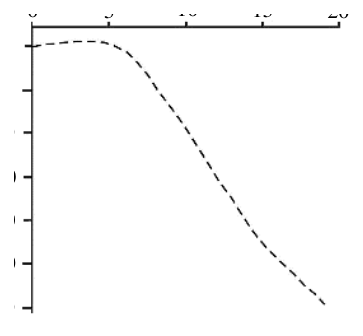
（A） 造山作用的影響（B） 人類活動造成的溫室效應（C） 太陽入射量變化造成冰川體積消融（D） 全球降雨量大增（E） 海底火山噴發答案：（C）
詳解與考點 正解：圖 13 顯示約 2 萬年前海水面比今日低約 120 公尺，之後快速回升；關鍵是這段跨越萬年的全球性上升。末次冰期結束、進入全新世間冰期時，地球軌道參數使太陽入射量改變，氣候回暖，大陸冰川大量消融，水回流海洋而使海水面上升。C：太陽入射量變化造成冰川體積消融，最能解釋圖示趨勢，故 C 為正解。
A：造山作用的時間尺度遠長於萬年，且影響多為局部，難以解釋全球海水面的快速變化，A 錯誤。
B：人類活動造成的顯著暖化僅近一兩百年，無法解釋 2 萬年來的整體海水面變化，B 錯誤。它看起來對，是因為現代暖化確會使海水面上升，但題目所問的時間尺度遠早於工業化。
D：全球降雨量增加主要改變水在大氣、陸地與海洋間的短期分布，不改變海陸水量總平衡，D 錯誤。
E：海底火山噴發對全球海水面影響微小，無法造成圖示約 120 公尺的長期變動，E 錯誤。
本題考點：海水面變動——先由圖讀出變化幅度與時間尺度，再連結末次冰期結束後冰川消融；全球性判準——能解釋全球且跨萬年變化的機制，優先考慮氣候與陸地冰量，而非局部地質事件。
媽媽去購物商場買烤全雞，聽老闆說這些雞只需要約40天就達到上市的尺寸。近數十年，高產肉雞育種選拔計畫有著重要的突破，在持續的選拔下，以56日齡雞隻為例，可從1957年的905克/隻提升到2005年時的4202克/隻（如圖14所示）。此外，為降低飼養成本，育種過程也會參考肉雞的飼料轉化率，即肉雞每單位肉重所需的飼料重量（如圖15）。 2.4 2.3 2.2 1957 1978 2005 飼 2.1 料 2 轉 1.9 化率 1.8 1.7 1.6 圖14 1.5 1970 1975 1980 1985 1990 1995 2000 2005 西元（年）圖15
第 37 題
依據肉雞育種的目的及手段，下列推論何者不正確？
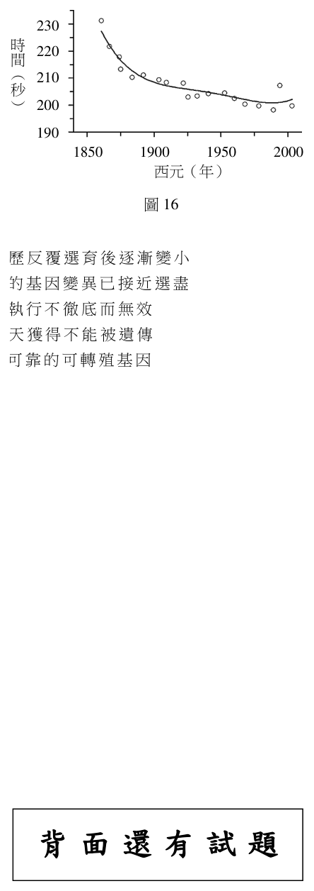
（A） 經過育種後的高產肉雞已和原始雞種相異，屬於不同物種（B） 人擇達成高產肉雞的過程中仍有基因突變或重組之發生（C） 原始雞種族群很可能比高產肉雞含有更多的遺傳變異（D） 降低飼養天數和飼料成本是人擇的雙目標（E） 飼料配方是否改變也應加入探討育種計畫的成效答案：（A）
詳解與考點 正解：題幹問「不正確」的推論，關鍵是人擇育種改變品種不等於形成新物種。A 說高產肉雞和原始雞種屬不同物種，錯誤；高產肉雞是經人擇選育出的品種，和原始雞種仍可交配並產生具生殖能力的後代，屬同一物種的不同品系，故 A 為正解。
B：人擇是在族群既有變異上進行選拔，遺傳過程中仍可能有基因突變或重組發生，正確。
C：原始雞種族群未經長期強烈的定向選拔，高產肉雞則經選拔使特定性狀集中；原始族群通常可能保有較多遺傳變異，正確。
D：題幹提到約 40 天達上市尺寸與飼料轉化率，降低飼養天數和飼料成本確是人擇育種的雙目標，正確。
E：飼料配方會影響肉雞生長與飼料轉化率，若要評估育種計畫成效，應納入探討，正確。
本題考點：人擇與物種——人擇可造成品種性狀顯著差異，但能產生可育後代者仍屬同一物種；遺傳變異——定向選拔通常縮減族群變異，突變與重組仍是變異來源；實驗評估——比較育種成效時要控制或檢視飼料等環境因素。
第 38 題
綜合圖 14 與圖 15，高產肉雞育種計畫中，同齡雞隻所呈現出的飼料轉化率顯示：（a）此選育計畫目標是否達成？（1分）（b）比較並說明1970與2000年代的雞隻生長速率、飼料攝取的變化、及此二者之關聯性為何，以支持你的結論。（3分）
本題選項為上圖中的 A／B／C／D，請對照圖片作答。
標準答案未收錄
詳解與考點 參考方向：(a) 由圖 15，飼料轉化率隨年代由 1970 年代約 2.3 降至 2000 年代約 1.8，代表每單位肉重所需飼料量下降，育種「降低飼養成本」之目標已達成。(b) 比較重點：由圖 14，1970→2000 年代同齡雞隻體重大幅增加，生長速率明顯提升；飼料轉化率下降代表生產等量雞肉所需飼料減少（飼料攝取相對效率提高）；二者關聯為選育同時提升生長速率並改善飼料利用效率，使雞隻長得更快又更省飼料，故支持「選育目標達成」之結論。此為 AI 整理之解題方向，非官方標準答案，須對照官方評分原則。
第 39 題
與高產肉雞類似的純種賽馬選育計畫顯示，自 1949 年以前的 50～100 年間獲得相當的秒數進展（以跑快者為勝），但 1950 以後則效果不佳（圖 16）。下列何者可能是效果不如預期的最合理推測？
（A） 賽馬族群大小經歷反覆選育後逐漸變小（B） 純種族群內適當的基因變異已接近選盡（C） 賽馬的選育計畫執行不徹底而無效（D） 跑快的表徵是後天獲得不能被遺傳（E） 還沒找到有潛力可靠的可轉殖基因答案：（B）
詳解與考點 正解：圖 16 顯示純種賽馬在早期選育後跑速已有明顯進展，但 1950 年後進展趨於停滯；定向選育必須有可遺傳的變異可供挑選，長期選育會使與跑得快有關的有利基因變異逐漸接近選盡。B 最能解釋選拔反應變小，故 B 為正解。
A：族群大小變小可能影響遺傳多樣性，但不是圖中成績停滯最直接的遺傳機制，A 錯誤。
C：若選育計畫執行不徹底，早期不會出現相當的秒數進展，與圖示趨勢不符，C 錯誤。
D：跑速具有可遺傳成分，否則早期的定向選育也無法累積進步，D 錯誤。
E：題幹討論的是純種賽馬的傳統選育，並非尋找可轉殖基因；基因轉殖也不能解釋長期選育後的趨緩，E 錯誤。
本題考點：定向選育——選育成效仰賴族群中可遺傳的性狀變異；選拔反應判準——長期選拔後若有利變異減少或接近固定，性狀進步會趨緩或停滯。
捕蠅草捕蟲的趣事是生物適應的現象之一。捕蠅草生長在養分及礦物質缺乏的溼地，為了生存，它演化出肉食性的特質。它的葉片特化成捕器，是可以吸引、捕抓及消化小型節肢動物的器官。捕器閉合的物理機制源自於葉片細胞的膨脹與收縮。當水分從內層細胞流入外層細胞時，內層細胞收縮、外層細胞膨脹，因而造成葉片彎曲而閉合（圖17）。焮毛內層細胞外層細胞葉片中肋圖17 捕器葉片的內側有焮毛，可感應獵物的觸動。每次觸發焮毛會產生一個電位。研究顯示，產生第一次電位時，葉片仍會保持張開，並記憶第一次的觸發。若在 20秒內發生第二次觸發，葉片才會快速閉合困住獵物。科學家在葉子中肋和葉片分別插入電極進行充電，以模擬焮毛被觸發時產生電位的現象，他們發現無論是分段充電，還是連續充電，充電電量都要達到14 µC，葉片才會在大約0.5秒內快速閉合。然而，若將捕蠅草的土壤浸潤在pH值高於4.5的溶液中，就算觸發焮毛產生電位，也無法讓葉子閉合。
第 40 題
有關捕蠅草捕器閉合的機制，下列促使兩側葉片合攏的敘述何者正確？
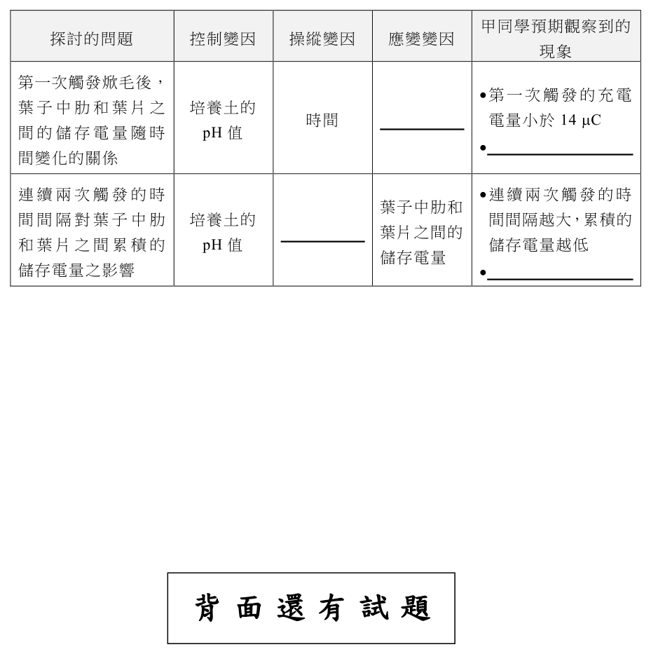
（A） 外層細胞的細胞膜施加於細胞壁的壓力變小，內層變大（B） 外層細胞的細胞膜施加於細胞壁的壓力變大，內層變小（C） 內外層細胞的細胞膜施加於細胞壁的壓力同時變小（D） 內外層細胞的細胞膜施加於細胞壁的壓力同時變大（E） 僅電位改變，細胞膜施加於細胞壁的壓力維持不變答案：（B）
詳解與考點 正解：題幹明示水分由內層細胞流入外層細胞，外層吸水膨脹、內層失水收縮；膨脹時細胞膜施加於細胞壁的壓力增大，收縮時減小。B 的外層變大、內層變小正確，故為正解。
A：把內、外層細胞的壓力變化方向完全顛倒。
C：內外層壓力若同時變小，不能形成兩側伸縮差，無法使葉片彎曲閉合。
D：內外層壓力若同時變大，同樣缺乏伸縮差，不能造成彎曲。
E：電位是觸發訊號；葉片實際閉合仍須伴隨水分移動與膨壓改變。
本題考點：植物細胞膨壓——吸水使膨壓增大、失水使膨壓減小；器官彎曲須兩側細胞膨壓改變方向不同，造成伸縮差。
第 41 題
捕蠅草有一親緣關係樹上的遠親，稱為豬籠草，它們同稱為食肉植物，表為兩 3 者的特性。依據此資訊判斷，（a）食肉植物的捕器是否為同功構造？（1 分）（b）判定的原因為何？（3 分）表 3 食肉植物（Carnivorous plant）捕蠅草（ Dionaea muscipula）豬籠草（ Nepenthes spp.）物種科別茅膏菜科（Droseraceae）豬籠草科（Nepenthaceae）地理分布北美洲熱帶亞洲捕器結構捕蟲葉捕蟲籠捕器消化方式消化酶消化酶及細菌作用
本題選項為上圖中的 A／B／C／D，請對照圖片作答。
標準答案未收錄
詳解與考點 參考方向：捕器「不是」同功構造，而是同源構造。判定原因——捕蠅草與豬籠草同稱食肉植物且互為親緣關係的遠親（題幹明示同一演化樹），其捕器（捕蟲葉、捕蟲籠）皆由「葉片特化」而來，具有共同的演化起源，屬於同源構造。同功構造指起源不同、因適應相似功能而外形相近的構造（如鳥翼與昆蟲翅）；本例兩者來自共同祖先的葉，故為同源而非同功。雖捕器外形（夾閉葉 vs 籠狀）與消化方式（純消化酶 vs 消化酶加細菌）不同，但同源與否看「起源」而非外形或功能。此為 AI 整理之解題方向，非官方標準答案，須對照官方評分原則。
第 42 題 （多選）
依據上面所提供的資訊，下列哪些敘述最有可能是正確的？（應選 2 項）
（A） 捕蠅草利用葉片彎曲時的彈力來記憶初次觸發（B） 每一次觸發焮毛都產生至少14 µC的充電電量（C） 充電電量達14 µC，可讓水分快速地從內層細胞流入外層細胞（D） 水分從外層細胞流入內層細胞，可以讓葉片張開（E） 捕蠅草在pH值大於4.5的環境中，充電電量需高於14 µC才能觸發葉片閉合答案：（C）（D）
詳解與考點 正解：「充電電量達到14 µC才快速閉合」與「閉合由水分內層→外層流動造成」。C：充電量達14 µC後，葉片約於0.5秒快速閉合；閉合時水分由內層細胞流入外層細胞，故 C 合乎題文。D：水分內層→外層時葉片彎曲閉合，反向由外層→內層時，內層膨脹、外層收縮，葉片可回復張開，故 D 正確。
A：題文只說葉片會記憶第一次觸發，沒有說記憶儲存在葉片彎曲的彈力中，無法據此推論。
B：14 µC是使葉片閉合所需達到的充電總量，不代表每一次觸發都各自產生至少14 µC；第一次觸發後葉片仍張開，正可知不能如此判定。
E：pH值高於4.5時，即使觸發焮毛產生電位也無法閉合，題文並未說提高至超過14 µC即可恢復閉合。它看起來對，是因為14 µC像是門檻值，但高pH造成的是閉合失效，不能逕自改解為較高門檻。
本題考點：生物閱讀實驗判讀——先分清題文的現象、條件與因果，充電達14 µC對應快速閉合；細胞水分流向判準——內層→外層使內縮外脹而彎曲閉合，反向則有利於張開；證據範圍——未交代的記憶機制或補救條件不可自行補入。
第 43 題
甲同學看完了以上對捕蠅草的敘述後，提出自己的看法：「焮毛第一次被觸發時，葉子中肋和葉片間會進行第一次充電，充電電量小於 14 µC，第二次觸發會進行第二次充電，讓葉子中肋和葉片間的儲存電量達到 14 µC。由於儲存的電量會慢慢散去，所以若沒有在 20 秒內進行第二次觸發，則第二次觸發是無法讓總電量達到 14 µC。」甲同學想證明自己的看法，設計了幾個實驗進行探究。將設計的實驗變因與預期觀察到的現象（即應變變因與操縱變因間的關係）填入表格的空格中。（4 分）甲同學預期觀察到的探討的問題控制變因操縱變因應變變因現象第一次觸發焮毛後，葉子中肋和葉片之培養土的時間電量小於 14 µC 間的儲存電量隨時 pH 值間變化的關係連續兩次觸發的時葉子中肋和間間隔對葉子中肋培養土的間間隔越大，累積的葉片之間的和葉片之間累積的 pH 值儲存電量越低儲存電量儲存電量之影響
本題選項為上圖中的 A／B／C／D，請對照圖片作答。
標準答案未收錄
詳解與考點 參考方向：本題要補「操縱變因」與「應變變因（預期現象）」。第一列探討「單次觸發後儲存電量隨時間變化」：控制變因為培養土 pH 值，操縱變因為「第一次觸發後到第二次觸發的時間（間隔時間）」，應變變因為「葉子中肋與葉片間的儲存電量」，預期現象為「間隔時間越長，殘留／累積儲存電量越低」（因電量會慢慢散去）。第二列探討「兩次觸發間隔對累積電量之影響」：控制變因為培養土 pH 值，操縱變因為「連續兩次觸發的時間間隔」，應變變因為「兩次累積的儲存電量」，預期現象即題幹已給「間隔越大累積電量越低」。核心是固定 pH，改變間隔時間，觀察累積電量是否隨間隔增大而下降，以驗證電量會散失的假說。此為 AI 整理之解題方向，非官方標準答案，須對照官方評分原則。
第 44 題
考慮磁鐵棒以等速度朝環圈甲移動前進，穿過環圈甲，至完全移離環圈甲的整個過程，下列敘述何者正確？
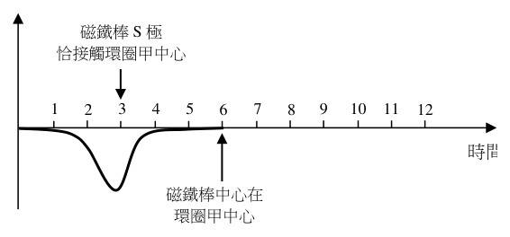
（A） 迴路產生應電流，其值隨時間增加而持續增大（B） 迴路產生應電流，其值隨時間增加而持續減小（C） 迴路產生應電流，其方向恆為順時針方向（D） 迴路產生應電流，其方向恆為逆時針方向（E） 若迴路對移動磁鐵棒施加磁力，則其方向恆向上答案：（E）
詳解與考點 正解：磁鐵以等速度穿過環圈，依楞次定律，感應效應必反抗磁鐵與線圈的相對運動。E：磁鐵接近時線圈排斥，遠離時線圈吸引；兩種情況對持續下移的磁鐵施力都向上，故 E 為正解。
A：感應電流量值取決於磁通量變化率，穿越過程的變化率先增後減，並非隨時間持續增大。
B：同樣地，變化率不是單調減小，且穿越中心時瞬間為 0 後反向，B 錯誤。
C：磁鐵進入與離開環圈甲時磁通量變化方向相反，感應電流方向會反轉，不會恆為順時針。
D：感應電流方向同樣會反轉，不會恆為逆時針。它看起來對，是因為只看接近或只看遠離的一段時，方向確實固定；題目問的是完整穿越過程。
本題考點：法拉第電磁感應——感應電流大小由磁通量變化率決定；楞次定律——感應效應反抗磁通量改變，亦可判為反抗相對運動；完整穿越判準——進入與離開時磁通量變化方向相反，電流方向必反轉。
第 45 題 （多選）
磁鐵棒以等速度朝環圈甲前進，當磁鐵棒中心與環圈甲中心之距離為時，迴路 d 的應電流量值為 I 。在磁鐵棒速度或迴路性質改變下，而迴路電阻仍為 R 、磁鐵棒中心與環圈甲中心之距離仍為 d 時，下列敘述哪些正確？（應選 2 項）
（A） 若將環圈甲的面積增大，但磁鐵棒速度不變，則 I 不會改變（B） 若將環圈乙的面積增大，但磁鐵棒速度不變，則 I 不會改變（C） 若迴路完全不變，但磁鐵棒以較快速度朝環圈甲前進，則的量值將減小 I（D） 若迴路完全不變，但磁鐵棒以較快速度朝環圈甲前進，則 I 的量值將增大（E） 若環圈甲、乙的圈數加倍，但面積不變、且磁鐵棒速度不變，則 I 不會改變答案：（B）（D）
詳解與考點 正解：磁鐵磁力線「僅穿過環圈甲」及感應電流量值由磁通量變化率決定。B：環圈乙沒有磁力線穿過，增大乙的面積不改變穿過甲的磁通量變化率，I 不變，故 B 正確。D：磁鐵速度較快時，單位時間內磁通量變化較大；由 |ε|=N|ΔΦ/Δt|、I=|ε|/R，R 不變，所以 I 增大，故 D 正確。
A：增大環圈甲面積會改變穿過甲的磁通量及其變化率，I 會改變，不是 I 不變。
C：速度加快使 |ΔΦ/Δt| 變大，I 應增大而非減小。
E：環圈甲、乙圈數加倍時，N 加倍，|ε|=N|ΔΦ/Δt| 隨之加倍；R 不變，I 也改變。
本題考點：法拉第定律——感應電動勢量值 |ε|=N|ΔΦ/Δt|，磁通量變化率、圈數增加皆使其增大；歐姆定律——R 固定時 I=|ε|/R，電動勢增大則電流量值增大；題設限制——磁力線僅穿過甲時，改變乙的面積不影響磁通量變化。
第 46 題
磁鐵棒以等速度朝環圈甲前進，在時間為 3 秒時磁鐵棒 S 極恰接觸環圈甲中心，在時間為 6 秒時磁鐵棒中心在環圈甲中心。電流以逆時針方向為正，迴路的應電流在 0～6 秒隨時間變化的曲線圖如圖 19 所示。考慮磁鐵棒從開始等速移進至完全移離環圈甲的過程，回答下列問題。
（a）試繪製出迴路在時間 6～12 秒的應電流隨時間變化的曲線圖，並以箭頭與文字註明磁鐵棒 N 極恰脫離環圈甲中心的時間點。（2 分）
（b）說明所繪應電流方向及曲線形狀的理由為何？（2 分）
本題選項為上圖中的 A／B／C／D，請對照圖片作答。
標準答案未收錄
詳解與考點 參考方向：(a) 0～6 秒磁鐵 S 極朝下穿入環圈甲，感應電流為某方向（題給以逆時針為正之曲線）。6～12 秒磁鐵 N 極端離開、整支遠離環圈甲，磁通量變化方向與穿入時相反，故 6～12 秒曲線應與 0～6 秒「上下鏡射（反號）」且形狀對稱：電流先反向增大、在某時刻達峰後回落趨近零。需標註「磁鐵棒 N 極恰脫離環圈甲中心」的時間點（約對應第 9 秒附近，磁鐵中心通過後 N 極端離開中心之時），以箭頭與文字標明。(b) 理由：穿入時磁通量增加、移離時磁通量減少，依楞次定律感應電流方向相反，故曲線變號；電流量值正比於磁通量變化率，磁鐵接近與遠離過程變化率先增後減，故呈先升後降的脈衝形狀。此為 AI 整理之解題方向，非官方標準答案，須對照官方評分原則。
第 47 題 （多選）
表 4 中的反應物與各種產物的路易斯結構，哪些具有雙鍵的鍵結？（應選 2 項）
表4 產物 二氧化碳的還原半反應 甲醇 \(CO_{2}(g)+6H^{+}+6e^{−}→CH_{3}OH(l)+H_{2}O(l)\) 乙烯 \(2CO_{2}(g)+12H^{+}+12e^{−}→C_{2}H_{4}(g)+4H_{2}O(l)\) 正丙醇 \(3CO_{2}(g)+18H^{+}+18e^{−}→C_{3}H_{7}OH(l)+5H_{2}O(l)\)
（A） 二氧化碳（B） 水（C） 甲醇（D） 乙烯（E） 正丙醇答案：（A）（D）
詳解與考點 正解：題幹要由路易斯結構判斷是否有雙鍵。A：二氧化碳的結構為 O=C=O，含兩個 C=O 雙鍵，正確。D：乙烯的結構為 H₂C=CH₂，含一個 C=C 雙鍵，正確。
B：水的結構為 H–O–H，只有 O–H 單鍵，錯誤。
C：甲醇 CH₃OH 的 C–H、C–O 與 O–H 都是單鍵，沒有雙鍵，錯誤。
E：正丙醇 CH₃CH₂CH₂OH 的碳鏈及羥基鍵結皆為單鍵，沒有雙鍵，錯誤。
本題考點：路易斯結構——CO₂ 寫作 O=C=O，乙烯寫作 H₂C=CH₂，皆含雙鍵；水與飽和醇類只含單鍵。
第 48 題 （多選）
下列對於表中相關的敘述，哪些正確？（應選項） 4 3
表4 產物 二氧化碳的還原半反應 甲醇 \(CO_{2}(g)+6H^{+}+6e^{−}→CH_{3}OH(l)+H_{2}O(l)\) 乙烯 \(2CO_{2}(g)+12H^{+}+12e^{−}→C_{2}H_{4}(g)+4H_{2}O(l)\) 正丙醇 \(3CO_{2}(g)+18H^{+}+18e^{−}→C_{3}H_{7}OH(l)+5H_{2}O(l)\)
（A） 生成每莫耳甲醇、乙烯與正丙醇產物分別所需質子的莫耳數比為1:2:3（B） 混有二氧化碳的乙烯氣體產物，可以利用通過氫氧化鈉水溶液達成乙烯的分離（C） 生成正丙醇產物不溶於水，會在反應容器內分層（D） 還原每莫耳二氧化碳分別生成甲醇、乙烯與正丙醇所需消耗的電子莫耳數不同（E） 常溫常壓下，甲醇與正丙醇皆具有揮發性，是易燃性的有機物質答案：（A）（B）（E）
詳解與考點 正解：半反應式的係數與物質性質。A：每 1 mol 甲醇需 6 mol H+，每 1 mol 乙烯需 12 mol H+，每 1 mol 正丙醇需 18 mol H+，比為 6:12:18=1:2:3，正確。B：CO2 是酸性氧化物，可被 NaOH 水溶液吸收；乙烯不與 NaOH 反應，故可除去 CO2 而分離乙烯，正確。E：甲醇與正丙醇皆為小分子醇類，常溫常壓下具有揮發性且易燃，正確。
C：正丙醇可與水互溶，不會在反應容器中分層。
D：每莫耳 CO2 所需電子數分別為甲醇 6 mol e−、乙烯 12/2=6 mol e−、正丙醇 18/3=6 mol e−，三者相同，不是不同。
本題考點：半反應式計量——比較生成 1 mol 產物時直接讀取係數，再換算每 1 mol CO2 的電子數；氣體分離可利用 CO2 被 NaOH 吸收；小分子醇的互溶性與易燃性須分別判斷。
第 49 題
表 5 為各種產物的價格（元/公斤）與以每莫耳電子計算所轉換產物的價格（元/ 莫耳電子）。其中，正丙醇價格尚未計算完成，回答下列各問題。（原子量 C＝12.0、 H＝1.00、O＝16.0）表5 產物市價（元/公斤）轉換產物的價格（元/莫耳電子）甲醇 16.9 0.090 乙烯 40.7 0.095 正丙醇？ 45.0 （a）請列式計算正丙醇轉換產物的價格為何？（2分）（b）另有一電化學催化系統，只會產生甲醇與正丙醇。已知每產生1莫耳此混合產物需消耗10.8莫耳電子，此混合產物中，列式計算甲醇與正丙醇的莫耳數比為何?（2分）
表4 產物 二氧化碳的還原半反應 甲醇 \(CO_{2}(g)+6H^{+}+6e^{−}→CH_{3}OH(l)+H_{2}O(l)\) 乙烯 \(2CO_{2}(g)+12H^{+}+12e^{−}→C_{2}H_{4}(g)+4H_{2}O(l)\) 正丙醇 \(3CO_{2}(g)+18H^{+}+18e^{−}→C_{3}H_{7}OH(l)+5H_{2}O(l)\)
標準答案未收錄
詳解與考點 參考方向：(a) 正丙醇 C3H7OH 分子量 = 3×12.0+8×1.00+16.0 = 60.0 g/mol；每 1 mol 正丙醇需 18 mol 電子。每公斤(1000 g)為 1000/60.0 ≈ 16.67 mol，對應電子 16.67×18 ≈ 300 mol e⁻。轉換產物價格 = 市價/每公斤電子莫耳數 = 45.0/300 = 0.15（元/莫耳電子）。(b) 設甲醇 a mol、正丙醇 b mol。甲醇 6 e⁻/mol、正丙醇 18 e⁻/mol，總電子 = 6a+18b；每產生 1 mol 混合產物（a+b=1）需 10.8 mol 電子，即 6a+18b=10.8 且 a+b=1。解得 6a+18(1−a)=10.8 → 18−12a=10.8 → 12a=7.2 → a=0.6、b=0.4，故甲醇：正丙醇 = 0.6:0.4 = 3:2。此為 AI 整理之解題方向，非官方標準答案，須對照官方評分原則。
在寒武紀以前的地層中，可找到由氧化鐵與二氧化矽細粒反覆堆疊形成的「縞狀（帶狀）鐵礦床」，是重要的鐵礦來源。約 24 億年前的地層中，更普遍地出露厚層的縞狀鐵礦床。縞狀鐵礦床形成原因的假設模型，是由亞鐵離子（Fe²⁺）與氧氣作用生成氧化鐵（Fe₂O₃ 及 Fe₃O₄）沉澱所致。而 Fe²⁺ 是由海底岩漿噴發所形成，氧則是由藍綠菌行光合作用所產生。圖 20 彙整了一些地球歷史事件，包括化石紀錄、縞狀鐵礦形成時段與相對含量，以及大氣中氧氣含量相對於現今濃度的變化。
第 50 題 （多選）
下列關於縞狀鐵礦與相關地球歷史事件的敘述，哪些正確？（應選 3 項）
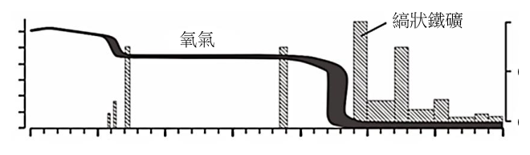
（A） Fe₂O₃ 是亞鐵離子經還原反應形成的（B） 在 24～35 億年前，縞狀鐵礦床形成當時，大氣中氧氣的濃度並未大幅增加，而是在其形成後，才大幅增加（C） Fe₂O₃ 與 Fe₃O₄ 均不易溶於水（D） Fe₂O₃ 與 Fe₃O₄ 均屬於分子化合物（E） 在 19 億年前，縞狀鐵礦床形成時，推測當時海洋中 Fe²⁺ 的濃度大幅上升答案：（B）（C）（E）
詳解與考點 正解：題幹問縞狀鐵礦與地球氧化史，關鍵是早期海洋的 Fe2+ 被氧化後沉澱，以及大氧化事件發生的先後。B：縞狀鐵礦大量形成於約 24～35 億年前時，大氣氧氣濃度仍低；氧先溶於海水並氧化亞鐵，待可供反應的鐵逐漸耗盡後，氧氣才在約 24 億年前後大幅增加，正確。C：Fe2O3（赤鐵礦）與 Fe3O4（磁鐵礦）都是不易溶於水的氧化鐵固體，可沉澱堆積成礦，正確。E：縞狀鐵礦來自海水 Fe2+ 與氧作用形成沉澱，海底岩漿持續供應可使早期海洋 Fe2+ 濃度大幅上升，正確。
A：Fe2O3 是 Fe2+ 被氧化形成，不是經還原反應形成，氧化還原方向顛倒。
D：Fe2O3、Fe3O4 由金屬鐵與非金屬氧組成，屬離子化合物，不是分子化合物。
本題考點：縞狀鐵礦成因——先有海水 Fe2+ 被氧化沉澱，後有大氣氧氣累積；氧化還原判準——Fe2+ 形成較高氧化數的鐵為氧化；化合物分類——金屬與非金屬形成的氧化物判為離子化合物。
第 51 題
有研究指出，在幾乎無氧的環境下，無氧光自營細菌在光照的情況下，可將亞鐵離子反應產生一些產物，其平衡反應式如下：
24Fe²⁺ ＋ 6 CO₂ ＋ x H₂O → (CH₂O)₆ ＋ y Fe(OH)₃ ＋ z H⁺
（a）寫出 x、y 和 z 值（說明求得數值的過程）。（3 分）
（b）(CH₂O)₆ 為有機化合物，而生活中常見的有機物質有醣類、蛋白質、油脂及核酸等，試問 (CH₂O)₆ 可能屬於其中哪一類的化合物？（1 分）
本題選項為上圖中的 A／B／C／D，請對照圖片作答。
標準答案未收錄
詳解與考點 參考方向：本題平衡反應式中 Fe²⁺ 的係數為 24（題幹原式為 24Fe²⁺ + 6CO₂ + xH₂O →（CH₂O）₆ + yFe(OH)₃ + zH⁺，原檔 OCR 將「24」誤拆成「2 4」，切勿誤判為 4）。
（a）逐步守恆求 x、y、z：
1. 鐵守恆：左側 24 個 Fe²⁺，右側 Fe 全在 Fe(OH)₃，故 y = 24。
2. 電荷守恆（亦即電子守恆）：左側 24Fe²⁺ 帶電荷 +48，右側僅 zH⁺ 帶電荷 +z，其餘皆中性，故 z = 48。可由氧化還原檢核：Fe²⁺→Fe³⁺ 每個失 1 電子，24 個 Fe 共放出 24 個電子；CO₂ 中碳為 +4，還原為（CH₂O）₆（葡萄糖 C₆H₁₂O₆）中碳為 0，每個碳得 4 電子，6 個碳共需 24 個電子，與 Fe 放出的 24 電子恰好相等，氧化還原平衡成立。
3. 氧守恆求 x：右側氧 =（CH₂O）₆ 的 6 個 +24 個 Fe(OH)₃ 的 24×3 = 72，共 78 個；左側氧 = 6CO₂ 的 12 個 + xH₂O 的 x 個，故 12 + x = 78，得 x = 66。
4. 以氫守恆驗算：左側氫 = 66×2 = 132；右側氫 =（CH₂O）₆ 的 12 + 24Fe(OH)₃ 的 24×3 = 72 + 48H⁺ 的 48 = 132，兩側相等，無誤。
故 x = 66、y = 24、z = 48。
（b）（CH₂O）₆ 即葡萄糖 C₆H₁₂O₆，屬於醣類（碳水化合物）。
官方滿分參考答案：24Fe²⁺ + 6CO₂ + 66H₂O →（CH₂O）₆ + 24Fe(OH)₃ + 48H⁺，即 x = 66、y = 24、z = 48；（CH₂O）₆ 為醣類（碳水化合物）。
第 52 題 （多選）
下列觀察或推論哪些正確？（應選 3 項）
（A） 縞狀鐵礦大部分出現在24億年前的地層中（B） 亞鐵離子源自岩漿，因此縞狀鐵礦屬於火成岩類（C） 今日海水中的亞鐵離子濃度較25億年前為低（D） 大氣中的氧氣含量呈現線性增高（E） 細菌可存活在極低氧的環境中答案：（A）（C）（E）
詳解與考點 正解：題幹依圖20判讀縞狀鐵礦、海水亞鐵離子、氧氣與細菌的時間關係。A：圖20顯示縞狀鐵礦相對含量在約24億年前達高峰，大部分縞狀鐵礦出現在該時段地層，A 正確。C：25億年前海洋富含 Fe2+，後來 Fe2+ 被氧化並沉澱成礦，隨氧氣增加，今日海水中的 Fe2+ 濃度較低，C 正確。E：圖中細菌在氧氣含量極低的早期，約35億年前起已出現，可知細菌能存活於極低氧環境，E 正確。
B：縞狀鐵礦由氧化鐵與二氧化矽沉澱反覆堆疊形成，屬化學沉積岩；鐵來源與岩石成因分類不同，不能因鐵源自岩漿就判作火成岩。
D：圖20的氧氣曲線呈階梯式變化，先維持低值、後躍升再變化，非線性平穩增高。
本題考點：地質圖表判讀——依時間軸讀取峰值、先後關係與趨勢；岩石分類——由形成過程判斷，化學沉澱形成者屬沉積岩；曲線判準——階梯式躍升不可誤讀為線性增加。
第 53 題
（a）依據在地球歷史出現的次序，由早期到晚期排列下列事件：（只須寫出事件代碼）（2 分）（甲）臭氧層的形成（乙）氧氣開始在大氣中快速累積、含量驟增（丙）生物上陸（丁）縞狀鐵礦床的形成（b）針對（乙）事件，則35～22億年前之間，除了在約23億年前有氧氣量的驟增外，若只考量光合作用的進行，還可推論出地球大氣的組成發生了什麼樣的改變？（1分）而此組成變化可能對全球氣溫造成的影響為何？（1分）
本題選項為上圖中的 A／B／C／D，請對照圖片作答。
標準答案未收錄
詳解與考點 參考方向：（a）依縞狀鐵礦床形成需先有海水溶氧、氧氣累積後才能氧化大氣、再形成臭氧層保護陸地、最後生物才登陸。故由早到晚為：丁（縞狀鐵礦床形成，海中亞鐵離子先消耗氧）→乙（氧氣在大氣快速累積，約23億年前驟增）→甲（臭氧層形成）→丙（生物上陸）。（b）光合作用持續吸收CO2、放出O2，故大氣CO2含量下降。CO2為溫室氣體，其減少使溫室效應減弱，可推論全球氣溫下降（呼應元古代大冰期）。此為AI整理之解題方向，非官方標準答案，須對照官方評分原則。
做為實證科學之一，天文學的發展仰賴大量的觀測結果。近百年以來，天文觀測的手段也早就由可見光延伸到電磁波的其他波段，甚至是電磁波以外的觀測手段。這些突破性的觀測成果，更讓科學家們發現宇宙當中前人所未知的領域。
第 54 題 （多選）
上述的重大成果也常獲得諾貝爾（物理）獎的肯定。回顧 20 世紀的諾貝爾獎中，因為天文觀測而獲獎者皆來自無線電波的觀測。我們如何解讀這個現象？（應選 2 項）
（A） 科學家一開始沒有預期到天文現象上有產生其他電磁波的可能性（B） 天文現象上產生的高能量電磁波無法傳遞這麼遠的距離而到達地球（C） 除了可見光之外，無線電波也可以幾乎不受阻礙的穿過大氣層（D） 從太空中觀測，要等到20世紀中期以後進入太空時代才有可能（E） 因為當時尚未有手機、基地台等干擾，透過無線電波可以得到較好的觀測成果答案：（C）（D）
詳解與考點 正解：題幹問 20 世紀天文諾貝爾獎的觀測何以集中於無線電波，關鍵在大氣對不同電磁波的穿透性與太空觀測技術的年代。C：可見光與無線電波都能幾乎不受阻礙穿過大氣層，地面觀測可直接接收無線電波；D：其他許多波段須在大氣層外觀測，而進入太空進行觀測要到 20 世紀中期後的太空時代才有可能，故 C、D 為正解。
A：科學家並非未預期天文現象會產生其他電磁波，限制在於大氣遮蔽與觀測技術。
B：高能量電磁波能從天體傳到地球附近，問題是進入地面前多被大氣吸收。
E：手機與基地臺是較晚期的干擾源；早期無線電天文學的發展主因是大氣窗，非因尚未有這些設備。
本題考點：大氣窗——可見光與無線電波可穿透大氣，適合地面觀測；X 射線、伽瑪射線等高能波段多受大氣吸收，須依賴太空觀測；解釋科技史現象時要區分「訊號能否到達」與「能否穿過大氣被地面儀器觀測」。
第 55 題
科學家們建造各式各樣的望遠鏡來收集電磁波訊號。新一代地面望遠鏡的口徑都愈來愈大，原因為何？
（A） 電磁波所行走的路徑會隨著宇宙膨脹而增加，所以需要大口徑望遠鏡（B） 口徑愈大，受到大氣擾動的影響愈小，可以看得愈清晰（C） 口徑愈大，可以收集到的訊號愈多，可以看到星等數值更大的天體（D） 隨著經濟發展，建造大口徑望遠鏡有助於提升國防產業的技術（E） 遙遠的天體會隨著宇宙膨脹而變大，所以需要大口徑望遠鏡答案：（C）
詳解與考點 正解：新一代望遠鏡口徑加大，直接增加集光面積，因此能收集較多光子與電磁波訊號，進而偵測較暗、星等數值較大的天體。C 正確。
A：宇宙膨脹可使遙遠天體紅移，但電磁波路徑增加不是建造大口徑望遠鏡的直接原因，A 錯誤。
B：大氣擾動需靠自適應光學或太空望遠鏡改善，口徑加大不會使其影響變小，B 錯誤。它看起來對，是因為大口徑可提高解析能力，但地面成像仍受大氣擾動限制。
D：國防技術可能有旁及效益，卻不是天文望遠鏡口徑增大的天文學理由，D 錯誤。
E：遙遠天體不會因宇宙膨脹而在觀測視角下變大；其角直徑反而更小，E 錯誤。
本題考點：望遠鏡集光力——集光面積隨口徑平方增加，訊號更多即可觀測較暗天體；解析度與大氣擾動——口徑效益與大氣影響是不同問題。
第 56 題
溫室氣體會造成地表的溫度升高，這是因為這些氣體會吸收來自地表的熱輻射；同樣的，這些氣體也會造成來自太空中的部分輻射無法通過大氣層。而地球大氣的組成多元，其他氣體也會影響電磁波能否通過大氣層。
（a）溫室氣體主要是吸收哪一種波段的電磁波？（1分）不過，溫室氣體主要集中在對流層，若要進行該波段的觀測，可以藉由飛機將望遠鏡攜帶至大氣層中的哪一層？（1分）
（b）說明電磁波中的紫外線無法從地面進行觀測的原因？（2分）
標準答案未收錄
詳解與考點 參考方向：（a）溫室氣體（如CO2、H2O）主要吸收紅外線（IR），故溫室氣體主要吸收紅外線波段。因紅外線會被對流層水氣與CO2吸收，需將紅外望遠鏡用飛機帶到對流層之上的平流層（同溫層）進行觀測。（b）紫外線會被高層大氣中的臭氧層（位於平流層）強烈吸收，幾乎無法穿透到地面，故紫外線觀測無法從地面進行，須藉由高空氣球、火箭或太空望遠鏡至大氣層外觀測。此為AI整理之解題方向，非官方標準答案，須對照官方評分原則。
其他年度
回到學科能力測驗自然的年度總覽 ，
或到學科能力測驗題庫首頁 看其他科目。
題目與標準答案出自大考中心 學測歷年試題（依著作權法 §9，考試試題不受著作權保護）。依中華民國《著作權法》第 9 條第 1 項第 5 款，
依法令舉行之各類考試試題不得為著作權之標的，得自由利用。詳解為 AI 整理的學習輔助，
並非官方標準答案 ；中華民國會修訂，引用前請對照現行版本查證。